소리를 배우는 피코 🔊🐦
머신러닝 확장판
피코로 소리를 듣고(INMP441 마이크) → 무슨 소리인지 배우고(k-NN 분류) → LED 빛과 MP3 음성으로 표현하고 → 학교 주변의 물까치 소리를 찾고 라즈베리파이 5의 BirdNET으로 확인하는 관측기까지 만드는 머신러닝 확장판이에요. 2026-vibe-pico 본편을 끝낸 뒤 AI의 듣기·생각·표현을 완성합니다. 모든 코드는 복사해 바로 실행. 🔊🧠💡🐦
소리를 배우는 피코 — 머신러닝 첫걸음
마이크 + k-NN으로 ‘내가 가르친 소리’(휘파람·박수·말소리·문·발걸음…)를 알아맞히는 만능 소리 분류기.
- 마이크로 소리를 숫자(특징)로 읽는다
- 키를 눌러 ‘내가 고른 소리들’에 직접 이름표를 붙인다
- k-NN으로 새 소리가 무엇인지 예측한다
- 정규화·k·확신도·다중클래스 같은 머신러닝 핵심 개념을 이해한다
- ML이 잘 되는 소리와 헷갈리는 소리의 차이를 안다
음성비서·새 찾기 앱·Shazam은 소리를 어떻게 알아들을까요? 비밀은 소리를 숫자로 바꿔, 닮은 것과 비교하는 거예요. 지금까지 피코는 if 값 > 임계값으로만 판단했지만, 소리는 규칙 한 줄로 못 가릅니다. 그래서 오늘은 다르게 — 내가 보여준 소리 예시만 모으면 피코가 스스로 경계를 찾습니다. 이것이 지도학습이고, 가장 직관적인 k-NN으로 ‘내 손이 만든 미니 음성 AI’를 만듭니다.
시작하기 전에 — 준비물과 순서
완전 처음이어도 괜찮아요. 아래 준비물만 확인하고 코드 ①→②→③→④ 순서로 한 칸씩 따라오면 됩니다. 막히면 각 단계의 ‘예상 화면’과 맨 끝 ‘자주 하는 실수’를 보세요.
핵심 개념 — 기계가 소리를 배운다는 것
어려운 수학은 없어요. 오늘의 전부는 딱 한 문장 — ‘새 소리와 가장 닮은 이웃에게 물어본다’입니다. 먼저 도구와 개념을 하나씩 살펴봐요.
k는 ‘몇 명에게 물어볼까’예요.🔬 더 알아보기 — 영교차(ZCR)가 어떻게 ‘높낮이’가 되나요?
하드웨어 준비 — INMP441 마이크 연결하기 (회로 구성도)
마이크는 INMP441 전방향 마이크 모듈 하나만 연결하면 됩니다. 그로브 포트가 아니라 쉴드가 뽑아 준 피코 헤더 핀에 점퍼선(암-수) 6가닥으로 꽂아요 — 아래 회로 구성도대로 한 선씩 따라오면 5분이면 끝나요. 결과를 보여줄 LED(2장에서 쓰던 것)는 D16 포트에 그로브 케이블로 꽂으면 됩니다. 아래 인터랙티브 배선표에서 포트·핀을 하나씩 체크하며 따라오세요.
🎙️ INMP441 연결 — 점퍼 6선 · 거의 나란히
⚠ 특히 — 리본선을 ‘통째로’ 연속 삽입하지 마세요. 센서 보드는 한 줄이 아니라 2열 6핀이라, 핀 순서가 쉴드 23~28번과 1:1로 맞지 않아요. VDD 한 선만 23~28 묶음과 떨어진 위쪽 36번(3V3)으로 따로 올려야 합니다. 색 순서를 믿지 말고, 아래 핀맵처럼 센서 글자(실크) → 피코 핀 번호를 한 선씩 확인하세요.
| SCK → GP18 · 24번 | WS → GP19 · 25번 | L/R → GND · 28번 |
| SD → GP20 · 26번 | VDD ⚠ → 3V3 · 36번 (5V 아님!) | GND → GND · 23번 |
- GND → GND(23번)주 점퍼 — SCK 바로 옆 GND
- SCK → GP18(24번)노 점퍼 — 클록
- WS → GP19(25번)초 점퍼 — 반드시 SCK 바로 다음 핀
- SD → GP20(26번)파 점퍼 — 데이터
- L/R → GND(28번)보 점퍼 — SD 옆 GND(왼쪽 채널)
- VDD → 3V3(36번)회 점퍼 — ⚠ 5V 아님! 23~28 묶음과 떨어진 위쪽 36번으로 따로
이 세 개만 맞으면 나머지 SCK·WS·SD는 GP18·19·20에 순서대로 꽂혀 있으면 됩니다. 리본 색이 아니라 센서 글자 라벨 기준으로 한 선씩 짚어 보세요.
이제 값을 읽어 ‘소리가 숫자가 되는’ 걸 봅니다
# 소리 인식 ①(I2S) — INMP441 전방향 마이크 값 읽기
# 점퍼 연결: VDD→3.3V(⚠5V 금지), GND→GND, SCK→GP18, WS→GP19, SD→GP20, L/R→GND
from machine import I2S, Pin
import struct, math, time
audio = I2S(0, sck=Pin(18), ws=Pin(19), sd=Pin(20),
mode=I2S.RX, bits=32, format=I2S.MONO, rate=16000, ibuf=40000)
buf = bytearray(512 * 4)
def level(): # 짧게 512표본의 '소리 크기'(RMS)
audio.readinto(buf)
v = [x >> 16 for x in struct.unpack("<512i", buf)] # 32→16비트로 줄여 보기 쉽게
m = sum(v) / 512
return math.sqrt(sum((x - m) ** 2 for x in v) / 512)
print("준비됐어요! 휘파람·박수·말소리를 내보세요. (Thonny 플로터 추천)")
while True:
print(level())
time.sleep(0.05)- 붙여넣기Thonny 편집창에 코드 ①을 붙여넣어요.
- 실행▶(초록 실행) 버튼을 누릅니다.
- 플로터 켜기메뉴 보기 → Plotter 체크 → 숫자가 그래프로 보여요.
- 소리 내기휘파람·박수를 해보세요.
- 콘솔/플로터에 숫자가 흐르나요? (안 나오면 ▶ 다시, 포트 확인)
- 휘파람을 불면 그래프가 출렁이나요?
- 가만히 있으면 값이 작게(거의 0) 유지되나요?
- 박수를 치면 값이 순간 확 튀나요?
따라하기 ① 소리를 잡아 특징 뽑기
소리가 나면 한 덩어리(약 0.15초)로 잡아, 크기(RMS)·높낮이(ZCR)·들쭉날쭉(crest) 세 숫자를 뽑습니다. 이 셋이 다음 단계 예측의 입력이에요.
# 소리 인식 ②(I2S) — INMP441로 소리를 잡아 '특징' 세 개 뽑기
# 크기(RMS) · 높낮이(ZCR) · 들쭉날쭉(crest=peak/RMS)
from machine import I2S, Pin
from neopixel import NeoPixel
import struct, time, math
audio = I2S(0, sck=Pin(18), ws=Pin(19), sd=Pin(20),
mode=I2S.RX, bits=32, format=I2S.MONO, rate=16000, ibuf=40000)
N = 2400; raw = bytearray(N * 4)
def grab():
audio.readinto(raw)
return [x >> 16 for x in struct.unpack("<%di" % N, raw)]
def features(buf):
n = len(buf); m = sum(buf) / n; ss = 0.0; zc = 0; peak = 0.0; prev = buf[0] - m
for v in buf:
d = v - m; ad = d if d >= 0 else -d; ss += d * d
if ad > peak: peak = ad
if (d >= 0) != (prev >= 0): zc += 1
prev = d
r = math.sqrt(ss / n); return r, zc, peak / (r + 1e-9)
small = bytearray(512 * 4)
def level():
audio.readinto(small); v = [x >> 16 for x in struct.unpack("<512i", small)]; m = sum(v) / 512
return math.sqrt(sum((x - m) ** 2 for x in v) / 512)
TIMING = (280, 515, 515, 745); NUM = 10
np = NeoPixel(Pin(16), NUM, timing=TIMING)
def flash(c, t=0.2): np.fill(c); np.write(); time.sleep(t); np.fill((0, 0, 0)); np.write()
print("조용히… 배경소음 측정 중")
for _ in range(8): level() # I2S는 켜진 직후 값이 튀어요 → 워밍업으로 버림
bg = sorted(level() for _ in range(25)); base = bg[len(bg) // 2] # 중앙값(튀는 값에 안 휘둘림)
THRESH = base * 2.5 + 25 # 감지가 안 되면 ↓, 너무 잦으면 ↑
print("준비! 소리를 내보세요.")
while True:
if level() > THRESH:
rms, zcr, crest = features(grab())
print("소리 감지! 크기=%.0f 높낮이=%d 들쭉날쭉=%.2f" % (rms, zcr, crest))
flash((0, 0, 40)); time.sleep(0.4)소리 감지! 크기=320 높낮이=181 들쭉날쭉=3.2 처럼 떠요. 박수·노크는 들쭉날쭉이 크고, 목소리·허밍은 작게 나옵니다. 소리마다 세 숫자가 달라지면 성공!THRESH 식의 숫자(*2.5)를 조절하세요. 소리가 안 잡히면 ↓, 가만히 있어도 잡히면 ↑.따라하기 ② 내 소리 직접 모으기 (혼자, 콘솔 키)
데이터 모으기가 이 책에서 제일 쉬워졌어요 — 와이파이도 짝도 필요 없습니다. Thonny 셸에 숫자 키를 누르고 그 소리를 내면 자동 저장돼요.
- 키 누르기셸에
1(휘파람) 등 숫자를 입력 (LED 주황) - 소리 내기3초 안에 그 소리를 한 번 → 가장 또렷한 0.15초가 저장(LED 초록). 큰 소리 아니어도 OK!
- 반복소리마다 10개씩 (또렷한 소리면 5개도 OK). 종류마다 비슷한 수로!
- 끝내기
s입력 →sounds.csv완성
# 소리 인식 ③(I2S) — INMP441로 소리 모으기 (콘솔 키 라벨링) · 특징 3개
from machine import I2S, Pin
from neopixel import NeoPixel
import struct, time, math
audio = I2S(0, sck=Pin(18), ws=Pin(19), sd=Pin(20),
mode=I2S.RX, bits=32, format=I2S.MONO, rate=16000, ibuf=40000)
N = 2400; raw = bytearray(N * 4)
def grab():
audio.readinto(raw)
return [x >> 16 for x in struct.unpack("<%di" % N, raw)]
def features(buf):
n = len(buf); m = sum(buf) / n; ss = 0.0; zc = 0; peak = 0.0; prev = buf[0] - m
for v in buf:
d = v - m; ad = d if d >= 0 else -d; ss += d * d
if ad > peak: peak = ad
if (d >= 0) != (prev >= 0): zc += 1
prev = d
r = math.sqrt(ss / n); return r, zc, peak / (r + 1e-9)
small = bytearray(512 * 4)
def level():
audio.readinto(small); v = [x >> 16 for x in struct.unpack("<512i", small)]; m = sum(v) / 512
return math.sqrt(sum((x - m) ** 2 for x in v) / 512)
TIMING = (280, 515, 515, 745); NUM = 10
np = NeoPixel(Pin(16), NUM, timing=TIMING)
def flash(c, t=0.2): np.fill(c); np.write(); time.sleep(t); np.fill((0, 0, 0)); np.write()
LABELS = {"1": "휘파람", "2": "박수", "3": "말소리", "4": "노크"}
print("조용히… 배경소음 측정 중")
# 녹음은 임계값 없이 — 키 누른 뒤 '가장 또렷한 한 조각'(약 0.15초)을 잡아요(작은 소리도 OK).
try: open("sounds.csv").close()
except OSError: open("sounds.csv", "w").write("rms,zcr,crest,label\n")
def counts():
c = {}
for ln in open("sounds.csv"):
ln = ln.strip()
if ln == "" or ln.startswith("rms"): continue
nm = ln.split(",")[3]; c[nm] = c.get(nm, 0) + 1
return c
print("\n=== 소리 모으기 ===")
for k, v in LABELS.items(): print(" %s = %s" % (k, v))
print(" s = 끝내기\n숫자 키를 누른 뒤, 3초 안에 그 소리를 '한 번' 내세요! (큰 소리 아니어도 돼요)")
while True:
cmd = input("라벨> ").strip()
if cmd == "s": break
name = LABELS.get(cmd)
if not name:
print(" ↑ 1~4 또는 s"); continue
print(" ▶ '%s' 소리를 지금 내세요… (3초 동안 들어요)" % name); np.fill((40, 25, 0)); np.write()
best = None; bestr = -1.0; t0 = time.ticks_ms()
while time.ticks_diff(time.ticks_ms(), t0) < 3000:
rms, zcr, crest = features(grab())
if rms > bestr: bestr = rms; best = (rms, zcr, crest)
rms, zcr, crest = best
open("sounds.csv", "a").write("%.0f,%d,%.2f,%s\n" % (rms, zcr, crest, name))
flash((0, 40, 0))
print(" 저장! %s (크기=%.0f 높낮이=%d 들쭉=%.2f) | 현재: %s" % (name, rms, zcr, crest, counts()))
time.sleep(0.3)
print("끝! sounds.csv 저장됨:", counts())저장! 휘파람 (크기=320 높낮이=181 들쭉=3.2) | 현재: {'휘파람': 3} 처럼 개수가 쌓여요. 종류마다 10개+가 되면 s로 끝내세요.LABELS 딕셔너리만 고치면 끝! 예) {"1":"사람목소리", "2":"노크", "3":"문여닫기", "4":"발걸음"}. 가르칠 소리를 여러분이 정하세요.따라하기 ③ k-NN으로 예측 → LED로 표현
이제 모은 데이터를 ‘모델’ 삼아 새 소리를 예측합니다. 소리마다 다른 색으로, 확신도만큼 LED 칸이 켜져요. k를 1과 7로 바꿔 차이도 느껴보세요. 아래 동작 흐름에서 소리를 골라 ‘듣기→특징→정규화→k-NN→확신→출력’ 6단계를 눈으로 따라가 보세요.
# 소리 인식 ④(I2S) — INMP441 + k-NN(다수결)으로 알아맞히기 + LED · 특징 3개
import struct, time, math
from machine import I2S, Pin
from neopixel import NeoPixel
audio = I2S(0, sck=Pin(18), ws=Pin(19), sd=Pin(20),
mode=I2S.RX, bits=32, format=I2S.MONO, rate=16000, ibuf=40000)
N = 2400; raw = bytearray(N * 4)
def grab():
audio.readinto(raw)
return [x >> 16 for x in struct.unpack("<%di" % N, raw)]
def features(buf):
n = len(buf); m = sum(buf) / n; ss = 0.0; zc = 0; peak = 0.0; prev = buf[0] - m
for v in buf:
d = v - m; ad = d if d >= 0 else -d; ss += d * d
if ad > peak: peak = ad
if (d >= 0) != (prev >= 0): zc += 1
prev = d
r = math.sqrt(ss / n); return r, zc, peak / (r + 1e-9)
small = bytearray(512 * 4)
def level():
audio.readinto(small); v = [x >> 16 for x in struct.unpack("<512i", small)]; m = sum(v) / 512
return math.sqrt(sum((x - m) ** 2 for x in v) / 512)
TIMING = (280, 515, 515, 745); NUM = 10
np = NeoPixel(Pin(16), NUM, timing=TIMING)
PALETTE = [(40, 0, 0), (0, 40, 0), (0, 0, 40), (40, 40, 0), (40, 0, 40), (0, 40, 40)]
def show(ci, lv):
c = PALETTE[ci % len(PALETTE)]
for i in range(NUM): np[i] = c if i < lv else (0, 0, 0)
np.write()
rows = []
for ln in open("sounds.csv"):
ln = ln.strip()
if ln == "" or ln.startswith("rms"): continue
r, z, c, nm = ln.split(","); rows.append((float(r), float(z), float(c), nm))
names = sorted(set(r[3] for r in rows)); cidx = {nm: i for i, nm in enumerate(names)}
print("예시 %d개, 소리 종류: %s" % (len(rows), names))
mins = [min(r[i] for r in rows) for i in range(3)]
maxs = [max(r[i] for r in rows) for i in range(3)]
def norm(v): return [(v[i] - mins[i]) / (maxs[i] - mins[i] + 1e-9) for i in range(3)]
ex = [(norm(r[:3]), r[3]) for r in rows]
def predict(feat, k=5):
q = norm(feat)
def d2(e): return sum((e[0][i] - q[i]) ** 2 for i in range(3))
near = sorted(ex, key=d2)[:k]; vote = {}
for e in near: vote[e[1]] = vote.get(e[1], 0) + 1
b = max(vote, key=vote.get); return b, vote[b] / sum(vote.values())
print("조용히… 배경소음 측정 중")
for _ in range(8): level() # I2S는 켜진 직후 값이 튀어요 → 워밍업으로 버림
bg = sorted(level() for _ in range(25)); base = bg[len(bg) // 2] # 중앙값(튀는 값에 안 휘둘림)
THRESH = base * 2 + 20 # 예측이 안 뜨면 2→1.5로↓, 너무 잦으면 ↑ (max()는 한 번 튀면 영영 안 떠요)
print("준비! 소리를 내면 알아맞힐게요.")
while True:
if level() > THRESH:
feat = features(grab()); name, conf = predict(feat)
print("이건… %s! (확신 %d%%, 크기=%.0f 높낮이=%d 들쭉=%.2f)"
% (name, conf * 100, feat[0], feat[1], feat[2]))
show(cidx[name], max(1, int(conf * NUM))); time.sleep(1.0); show(0, 0)이건… 휘파람! (확신 80%, 크기=318 높낮이=181 들쭉=3.2) 가 뜨고, LED가 그 소리의 색으로 확신도만큼 켜집니다. 안 가르친 살짝 다른 소리도 맞히면 — 그게 바로 일반화예요!(선택) 3D 산점도로 눈으로 보기 (Plotly)
피코가 새 소리를 맞히는 것을 본 뒤, 왜 어떤 소리는 잘 맞고 어떤 소리는 헷갈리는지 궁금할 때 그려 보는 활동이에요. 특징이 3개라 평면(2D)이 아니라 3차원으로 봅니다. PC에서 Plotly로 그리면 마우스로 빙글빙글 돌려가며 무리가 갈리는지 볼 수 있어요.
sounds.csv와 plot_sounds.py를 PC의 같은 폴더에 두는 것이 핵심이에요.- 1. 폴더 만들기PC 바탕화면에 폴더 하나(예:
sound)를 만들어요. - 2. CSV 내려받기Thonny 왼쪽 ‘파일’ 창에서
sounds.csv우클릭 → Download → 방금 만든 폴더에 저장. - 3. 코드 저장아래
plot_sounds.py를 같은 폴더에 같은 이름으로 저장. - 4. PC의 파이썬으로 바꾸기Thonny 오른쪽 아래 인터프리터를 ‘이 컴퓨터의 Python’으로 바꾸고, 도구 → 패키지 관리에서
plotly와pandas를 한 번 설치해요. - 5. 실행
plot_sounds.py를 열고 ▶를 누르면 브라우저에 3D 그래프가 떠요. 피코로 돌아갈 때는 인터프리터를 다시 피코로 바꿔요.
# (PC에서 실행) sounds.csv를 Plotly 3D 산점도로 보기
# 처음 한 번만: pip install plotly pandas
import pandas as pd
import plotly.express as px
df = pd.read_csv("sounds.csv") # 피코에서 내려받은 파일
fig = px.scatter_3d(
df, x="rms", y="zcr", z="crest", color="label",
title="내가 모은 소리들 (3D)",
labels={"rms": "크기", "zcr": "높낮이", "crest": "들쭉날쭉", "label": "소리"},
)
fig.update_traces(marker=dict(size=5))
fig.show() # 브라우저가 열리고, 마우스로 빙글빙글 돌려보기!★ 다양하게 실험해보기 — 무엇이든 가르쳐 보세요
같은 코드로 가르칠 소리만 바꾸면 끝없이 실험할 수 있어요. 쉬운 것부터 도전까지, 난이도 순으로 골라보세요. (어려운 건 조용한 환경 + 마이크 가까이를 권해요.)
자주 하는 실수
norm())하세요.k가 짝수라 동점.스스로 점검하기
k-NN에서 ‘학습’은 무엇을 하나요?
정규화는 왜 필요할까요?
영교차(ZCR)가 왜 ‘높낮이’인가요?
확신 80%는 무슨 뜻인가요?
발걸음이 잘 안 맞으면 버그인가요?
(선택) 모의 테스트 — 장비가 없을 때 브라우저에서
피코가 없어도 괜찮아요. 아래에서 소리를 골라 누르면 같은 3특징 k-NN이 맞히고, 목소리로도 말해줍니다(브라우저 음성). ‘내 마이크’ 탭에선 진짜 마이크로 직접 가르치고 테스트할 수도 있어요.
피코가 말을 한다 — 소리의 주인공을 목소리로
k-NN이 알아맞힌 소리에게 ‘이름’을 붙여 목소리로 말해주는 출력기. Grove MP3 v4로 듣기→생각→말하기 한 사이클을 완성합니다.
- 출력 모듈(Grove MP3 v4)에 UART로 ‘명령’을 보내 소리를 낸다
- 분류 결과(이름표)를 음성 파일 번호로 잇는
TRACK표를 이해한다 - ‘자기 소리 되먹임’과 ‘모듈 부팅’ 같은 현실 문제를 코드로 다스린다
- 확신이 낮으면 ‘모르겠어요’ 하고 침묵하는 규칙을 넣는다
- 입력(마이크)→처리(k-NN)→출력(음성)의 AI 한 바퀴를 직접 잇는다
소리 분류 챕터에서 피코는 ‘이건 휘파람!’이라고 속으로만 알았어요(콘솔 글자·LED 색). 그런데 음성비서·새 찾기 앱은 거기서 한 발 더 나아가 사람의 말로 대답합니다. 오늘은 그 마지막 한 칸을 채워요. 분류 결과라는 이름표를, Grove MP3 v4를 통해 들리는 목소리로 되돌려줍니다. 그러면 ‘기계가 듣고·생각하고·말한다’는 AI의 한 사이클이 눈앞에서 완성돼요. 아래 순서대로 한 칸씩만 따라오면 됩니다.
0단계 · 시작하기 전에 (준비물 점검)
이 챕터는 소리 분류 챕터의 ‘다음 편’이에요. 시작 전에 아래 세 가지가 준비됐는지 먼저 확인하세요. 하나라도 비면 그 챕터를 먼저 끝내고 오면 됩니다.
- 소리 분류 챕터에서 만든
sounds.csv가 피코 안에 들어 있다 (이게 ‘모델’이에요) - 마이크가 연결돼 있고, 휘파람·박수가 이미 잘 구분됐다
- 새로 준비한 Grove MP3 v4.0 모듈(스피커 포함, Grove 케이블), FAT32로 포맷한 microSD, PC에서 카드를 읽을 카드 리더가 있다
핵심 개념 — ‘출력기’가 마지막 한 칸을 채운다
코드를 짜기 전에, 오늘 쓰는 부품과 개념을 하나씩 살펴봐요. 딱 네 가지만 이해하면 됩니다.
"휘파람" 같은 글자(이름표)예요. 이걸 TRACK = {"휘파람":1, "박수":2}라는 사전 한 줄로 음성 트랙 번호에 연결합니다. 그게 전부예요.if conf >= CONF_MIN)로 가르칠 수 있어요.1단계 · 모듈 연결하기 (배선)
Grove MP3 v4는 그로브 4핀 케이블 하나면 연결 끝이에요. 마이크는 앞 챕터 그대로 두고(VDD는 36번 3V3 그대로), MP3 모듈만 새로 답니다.
- MP3 모듈 꽂기그로브 케이블로 쉴드의 UART0 포트에 ‘톡’ 꽂기 (피코 핀 TX=GP0, RX=GP1에 연결돼요. 쉴드에 UART 포트가 두 개인데 UART1이 아니라 UART0이에요!)
- 스피커 달기모듈의 스피커 단자에 작은 스피커, 또는 3.5mm 잭에 이어폰을 꽂기
- SD카드 꽂기음성 MP3를 넣은 microSD를 모듈에 삽입 (만드는 법은 2단계)
- MP3 모듈의 전원 LED에 불이 들어오나요?
- 스피커(또는 이어폰)가 모듈에 단단히 꽂혔나요?
- SD카드가 딸깍 소리 나게 끝까지 들어갔나요?
2단계 · 음성 파일 만들어 SD카드에 넣기
소리 이름마다 한 마디 음성 파일을 SD 카드에 넣어요. 샘플 네 개를 받아 아래 순서대로 넣으면 돼요.
⬇ 0001 휘파람⬇ 0002 박수⬇ 0003 말소리⬇ 0004 노크⬇ 전체 ZIP
② 카드 맨 위 폴더에
0001.mp3부터 한 개씩 순서대로 복사해요. 이 모듈은 파일 이름이 아니라 복사한 순서로 번호를 매기는 경우가 많아서, 한꺼번에 끌어다 놓으면 순서가 섞일 수 있어요.③ Mac에서 복사했다면 터미널에서
dot_clean /Volumes/카드이름을 실행해 숨김 파일을 지워요.④ 3단계에서 1번·2번 음성이 맞게 나오는지 직접 들어 확인해요.
내 목소리로 바꾸고 싶으면 휴대폰 녹음 앱으로 MP3를 만들어 같은 번호 이름으로 넣으면 돼요.
3단계 · 모듈만 따로 테스트 (소리부터 확인!)
분류와 합치기 전에, MP3 모듈이 혼자서도 소리를 잘 내는지부터 확인해요. 여기서 소리가 나야 다음 단계가 의미 있어요. 제일 먼저 넘어야 할 관문이에요.
# MP3 출력 ① — Grove MP3 v4.0 (WT2605CX) 모듈 단독 테스트
# 피코는 "몇 번 곡 틀어/볼륨 얼마로" 같은 '명령'만 보냅니다. 재생은 모듈이 해요.
# ⚠ v2.0(KT403A)과 명령이 '완전히' 다릅니다! v4.0은 7E..EF 바이너리가 아니라
# 'AT+' 텍스트 명령을 \r\n 으로 끝맺어 115200 baud로 보냅니다.
from machine import UART, Pin
import time
# Grove 케이블 → 쉴드의 UART0 포트(UART1 아님!). 피코 TX=GP0, RX=GP1 · 쉴드 전원 스위치는 5V
uart = UART(0, baudrate=115200, tx=Pin(0), rx=Pin(1)) # ★ 115200! (v2.0은 9600)
time.sleep(1.0) # 모듈 부팅 대기
def at(cmd, wait=0.4):
uart.write((cmd + "\r\n").encode()) # AT 텍스트 + 줄바꿈
print(">", cmd)
time.sleep(wait)
if uart.any():
print(" <", uart.read()) # 모듈 응답(보통 'OK')
at("AT+VOL=22") # 볼륨 0~31 (시끄러우면 낮추기)
print("1번 곡(0001.mp3) 재생…")
at("AT+PLAY=sd0,1") # SD카드 루트의 1번 곡
time.sleep(3)
print("2번 곡(0002.mp3) 재생…")
at("AT+PLAY=sd0,2")
time.sleep(3)
at("AT+STOP")
print("끝! 소리가 났나요?")> AT+VOL=22
1번 곡(0001.mp3) 재생…
> AT+PLAY=sd0,1
🔊 "휘파람이에요"
2번 곡(0002.mp3) 재생…
> AT+PLAY=sd0,2
🔊 "박수네요"7E…EF 바이너리와 완전 다름!). 맨 위에서 연결하고 모듈 부팅을 1초 기다린 뒤, AT+VOL=22로 볼륨(0~31)을, AT+PLAY=sd0,1로 1번 곡을 재생합니다. 명령 끝엔 항상 \r\n(줄바꿈)이 붙어요.AT+VOL=22→28) ⑥ SD가 FAT32이고 0001.mp3가 있나? ⑦ 부팅 대기(1.0→2.0초) 늘리기. 대부분 ①·②·④·⑥에서 해결돼요.- 스피커에서 1번 곡 소리가 나나요?
- 약 3초 뒤 2번 곡으로 바뀌나요?
AT+VOL=22의 숫자를 5·31로 바꾸면 음량이 변하나요?
4단계 · 분류 결과를 ‘목소리’로 (메인 완성)
이제 마지막! 마이크로 들은 소리를 k-NN으로 알아맞히고, 그 이름표에 맞는 음성 파일을 재생합니다. 코드의 TRACK 표만 내 이름표에 맞추면 끝이에요.
# MP3 출력 ② — k-NN이 알아맞힌 소리의 '주인공'을 목소리로 (Grove MP3 v4.0 · WT2605CX)
# 듣기(INMP441 마이크) → 생각(k-NN) → 말하기(MP3). ⚠ v4.0은 AT 명령 / 115200 baud!
# 마이크 점퍼: VDD→3.3V(⚠5V 금지), GND→GND, SCK→GP18, WS→GP19, SD→GP20, L/R→GND
# ※ 소리 분류 챕터에서 만든 sounds.csv(rms,zcr,crest,label)가 피코에 들어 있어야 해요.
import struct, time, math
from machine import I2S, Pin, UART
from neopixel import NeoPixel
# ── 마이크 (INMP441 · I2S) — 소리 챕터와 똑같이 '듣기' · 특징 3개 ──
audio = I2S(0, sck=Pin(18), ws=Pin(19), sd=Pin(20),
mode=I2S.RX, bits=32, format=I2S.MONO, rate=16000, ibuf=40000)
N = 2400; raw = bytearray(N * 4) # 약 0.15초 한 덩어리 (소리 챕터와 동일!)
def grab():
audio.readinto(raw)
return [x >> 16 for x in struct.unpack("<%di" % N, raw)]
def features(buf):
n = len(buf); m = sum(buf) / n; ss = 0.0; zc = 0; peak = 0.0; prev = buf[0] - m
for v in buf:
d = v - m; ad = d if d >= 0 else -d; ss += d * d
if ad > peak: peak = ad
if (d >= 0) != (prev >= 0): zc += 1
prev = d
r = math.sqrt(ss / n); return r, zc, peak / (r + 1e-9)
small = bytearray(512 * 4)
def level():
audio.readinto(small); v = [x >> 16 for x in struct.unpack("<512i", small)]; m = sum(v) / 512
return math.sqrt(sum((x - m) ** 2 for x in v) / 512)
# ── MP3 출력기 (Grove MP3 v4.0 · WT2605CX) — '말하기' : AT 명령 ──
uart = UART(0, baudrate=115200, tx=Pin(0), rx=Pin(1)) # ★ v4.0 = 115200
time.sleep(1.0) # 모듈 부팅 대기
def at(s):
uart.write((s + "\r\n").encode()); time.sleep(0.1)
at("AT+VOL=22") # 볼륨 0~31
# ── ★ 이름표 → 음성 파일 번호 (TRACK 표) ──
# SD(FAT32)에 0001.mp3="휘파람이에요", 0002.mp3="박수네요" … 순서대로 넣어두세요.
TRACK = {"휘파람": 1, "박수": 2, "말소리": 3, "노크": 4}
# ── LED (소리마다 색) ──
TIMING = (280, 515, 515, 745); NUM = 10
np = NeoPixel(Pin(16), NUM, timing=TIMING)
PALETTE = [(40, 0, 0), (0, 40, 0), (0, 0, 40), (40, 40, 0), (40, 0, 40), (0, 40, 40)]
def paint(c, lv):
for i in range(NUM): np[i] = c if i < lv else (0, 0, 0)
np.write()
# ── sounds.csv 불러오기 + 정규화 + k-NN (소리 챕터와 동일 · 특징 3개) ──
rows = []
for ln in open("sounds.csv"):
ln = ln.strip()
if ln == "" or ln.startswith("rms"): continue
r, z, c, nm = ln.split(","); rows.append((float(r), float(z), float(c), nm))
names = sorted(set(r[3] for r in rows)); cidx = {nm: i for i, nm in enumerate(names)}
mins = [min(r[i] for r in rows) for i in range(3)]
maxs = [max(r[i] for r in rows) for i in range(3)]
def norm(v): return [(v[i] - mins[i]) / (maxs[i] - mins[i] + 1e-9) for i in range(3)]
ex = [(norm(r[:3]), r[3]) for r in rows]
def predict(feat, k=5):
q = norm(feat)
def d2(e): return sum((e[0][i] - q[i]) ** 2 for i in range(3))
near = sorted(ex, key=d2)[:k]; vote = {}
for e in near: vote[e[1]] = vote.get(e[1], 0) + 1
b = max(vote, key=vote.get); return b, vote[b] / sum(vote.values())
# ── 배경소음 → 임계값 ──
print("조용히… 배경소음 측정 중")
for _ in range(8): level() # I2S는 켜진 직후 값이 튀어요 → 워밍업으로 버림
bg = sorted(level() for _ in range(25)); base = bg[len(bg) // 2] # 중앙값(튀는 값에 안 휘둘림)
THRESH = base * 2 + 20 # 반응이 없으면 2→1.5로↓, 너무 잦으면 ↑
# ── ★ '말하기' — 자기 소리 되먹임 방지 ──
# 말하는 동안 들어온 소리는 계속 읽어서 버리고, 잔향이 0.3초 조용해질 때까지(최대 2초) 기다려요.
# (읽지 않고 쉬기만 하면 마이크 버퍼에 자기 목소리가 남아 다음 판단에 섞여요)
SPEAK_SEC = 2.5 # 멘트 길이만큼. 음성이 잘리면 늘리세요.
def say(track):
at("AT+PLAY=sd0,%d" % track) # ← 그 소리의 '이름'을 목소리로!
t0 = time.ticks_ms()
while time.ticks_diff(time.ticks_ms(), t0) < int(SPEAK_SEC * 1000):
level() # 재생 중 들어온 소리는 읽어서 버려요
t0 = quiet = time.ticks_ms()
while time.ticks_diff(time.ticks_ms(), t0) < 2000:
if level() > THRESH: quiet = time.ticks_ms()
elif time.ticks_diff(time.ticks_ms(), quiet) >= 300: break
CONF_MIN = 0.6 # 확신이 이보다 낮으면 '모르겠어요' → 침묵
print("준비! 소리를 내면 누구인지 말해줄게요. (멈추려면 Ctrl+C 또는 Thonny 정지)")
try:
while True:
if level() > THRESH:
feat = features(grab()); name, conf = predict(feat)
if conf >= CONF_MIN and name in TRACK:
print("이건… %s! (확신 %d%%)" % (name, conf * 100))
paint(PALETTE[cidx[name] % len(PALETTE)], max(1, int(conf * NUM)))
say(TRACK[name])
else:
print("음… 잘 모르겠어요 (확신 %d%%) — 조용히 있을게요" % (conf * 100))
paint((8, 8, 8), NUM); time.sleep(0.8)
paint((0, 0, 0), 0)
time.sleep(0.005)
except KeyboardInterrupt:
print("멈췄어요.")
finally: # 재생 멈춤 → 마이크 정리 → LED 끄기. 하나가 실패해도 나머지는 해요
for job in (lambda: uart.write(b"AT+STOP\r\n"), audio.deinit, lambda: paint((0, 0, 0), 0)):
try: job()
except Exception as e: print("정리 중 오류:", e)조용히… 배경소음 측정 중
준비! 소리를 내면 누구인지 말해줄게요. (멈추려면 Ctrl+C)
이건… 휘파람! (확신 80%)
🔊 "휘파람이에요"
이건… 박수! (확신 100%)
🔊 "박수네요"
음… 잘 모르겠어요 (확신 40%) — 조용히 있을게요say()는 ① 말하는 동안(SPEAK_SEC) 들어온 소리를 계속 읽어서 버리고 ② 잔향이 0.3초 조용해질 때까지 기다립니다. 읽지 않고 쉬기만 하면 마이크 버퍼에 자기 목소리가 남아 다음 판단에 섞여요. 음성이 길어 끝까지 안 나오면 이 값을 늘리세요. 이게 이 챕터가 실제로 돌아가게 하는 장치예요.TRACK = {"휘파람":1, ...}의 왼쪽 이름은 데이터를 모을 때 쓴 이름표와 한 글자도 다르면 안 돼요. ‘휘파람’과 ‘휘파람소리’는 다른 이름이라 음성이 안 나와요. 이름표를 바꿨다면 여기도 같이 고쳐요.★ 생각해 보기 — 왜 목소리로 알려 줄까
🔬 더 알아보기 — LED 색과 목소리는 무엇이 다를까?
자주 하는 실수
TRACK 값이 어긋남.TRACK 이름이 이름표와 글자가 다름.SPEAK_SEC를 음성 길이만큼 넉넉히, 또는 스피커를 마이크에서 떼기.CONF_MIN보다 낮음.AT+VOL=22의 숫자(0~31)를 조절하세요.스스로 점검하기
다음 질문에 답할 수 있으면 이 장을 이해한 거예요. (먼저 스스로 답해보고 펼치세요)
마이크와 MP3 모듈은 뭐가 다른가요?
피코가 MP3 모듈에 보내는 건 무엇인가요?
TRACK 표는 무슨 일을 하나요?
말하는 동안 마이크 입력을 왜 무시하나요?
확신이 낮으면 왜 말을 안 하나요?
소리가 아예 안 날 때 1순위 점검은?
0001.mp3가 있는지.물까치를 찾는 피코 — 소리로 새를 알아보는 관측기
3초 동안 소리를 듣고 직접 모은 예시와 비교해 물까치 후보를 찾는 관측기. 찾으면 말하고, 녹음하고, 시각을 남겨요.
- 마이크·microSD·시계·MP3를 쉴드에 꽂아 관측기를 조립한다
- 3초 동안 들은 소리를 숫자 25개(특징)로 바꾼다
- 물까치와 헷갈릴 만한 소리의 예시를 모아 k-NN으로 물까치 후보를 찾는다
- 예시로 쓰지 않은 소리를 탐지기에 들려주고 재현율과 오판을 세어 기준을 정한다
- 관측 기록으로 물까치가 나타난 시간을 그래프로 본다
물까치는 우리나라 학교와 공원 주변에서 흔히 볼 수 있는 텃새예요. 여러 마리가 무리 지어 다니면서 거칠고 짧은 소리를 반복해서 내요. 새소리 앱은 녹음된 소리를 짧은 구간으로 나누고, 각 구간의 주파수 모양을 비교해서 어떤 새인지 알아봐요. 이 장에서는 피코가 3초 동안 소리를 듣고, 학생이 직접 모은 예시와 비교해서 물까치인지 판단해요. 물까치 후보를 찾으면 스피커로 알리고, 그 3초와 시각을 기록해요. 피코의 판단은 1차 판정이라서, 다음 장에서는 BirdNET이라는 새소리 AI로 2차 확인을 해요.
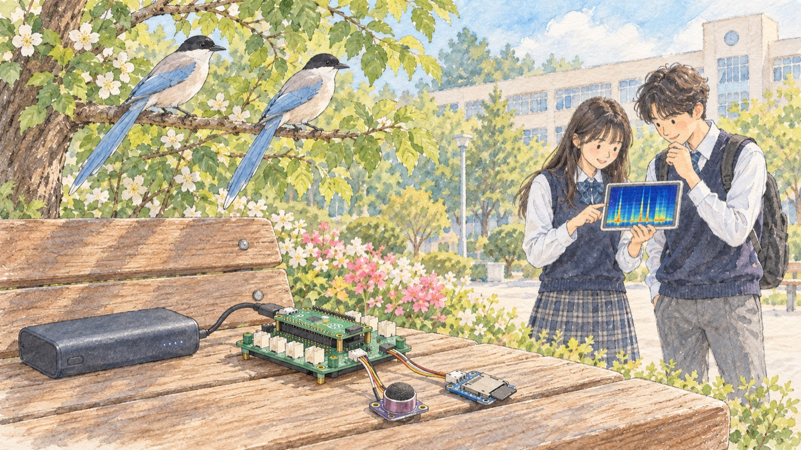
시작하기 전에 — 흐름과 기대치
진행 순서는 조립, 부품 확인, 예시 모으기, 탐지기 실행, 채점, 현장 설치로 이어져요. 처음에는 PC와 USB로 연결해서 전원과 화면(Thonny)을 함께 쓰고, 잘 되면 보조배터리로 바꿔서 밖으로 들고 나가요. 납땜은 하지 않고, 모든 부품은 꽂아서 연결해요.
준비물
| 사진 | 부품 | 역할 | 수량 | 구입 | 비고 |
|---|---|---|---|---|---|
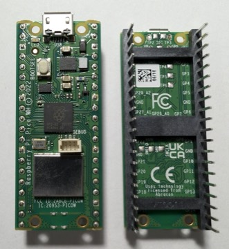 | 라즈베리파이 피코 2 WH | 두뇌 | 1 | 디바이스마트 | 앞 장 것 사용 가능 |
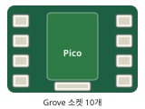 | Grove Shield for Pi Pico v1.0 | 부품 연결판 | 1 | 디바이스마트 | 앞 장 것 사용 가능 |
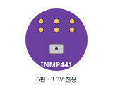 | INMP441 전방향 마이크 모듈(납땜) | 소리 듣기 | 1 | 디바이스마트 | 핀헤더가 납땜되어 나오는 제품. 앞 장 것 사용 가능 |
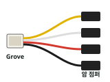 | Grove 4핀 암 점퍼 변환 케이블(5개입) | 마이크 연결 | 1 | 디바이스마트 | 2개 사용 |
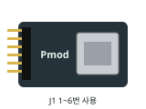 | Digilent Pmod MicroSD | 녹음·기록 저장 | 1 | 디바이스마트 | 학교구매전용 상품. 3.3V 전용 |
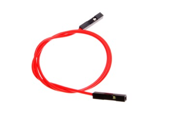 | 암-암 점퍼 케이블 10cm | SD 모듈 연결 | 6가닥 | 디바이스마트 | |
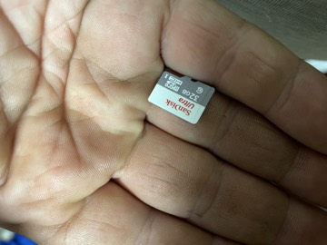 | microSDHC 32GB | 녹음용 카드 | 1 | 디바이스마트 | FAT32 |
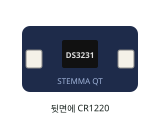 | Adafruit DS3231 RTC (STEMMA QT) | 시계 | 1 | 디바이스마트 | |
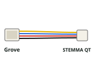 | Grove to STEMMA QT 케이블 | 시계 연결 | 1 | 디바이스마트 | |
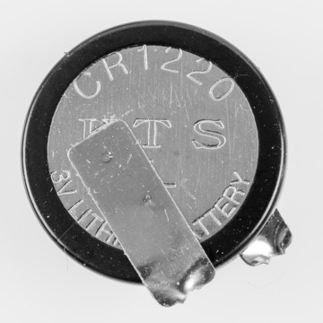 | CR1220 동전 전지 | 시계 전원 유지 | 1 | 디바이스마트 | |
| Grove Button(P) | 관측 끝내기 | 1 | 디바이스마트 | 누르면 HIGH | |
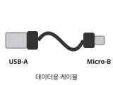 | USB-A to Micro-B 데이터 케이블 | PC 연결·전원 | 1 | 디바이스마트 | PC가 USB-C면 15601504 |
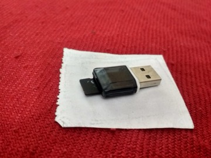 | microSD 카드 리더 | PC에서 카드 읽고 쓰기 | 모둠당 1 | 디바이스마트 | 포맷·MP3 복사·녹음 회수 |
| 앞 장에서 쓰던 것 | |||||
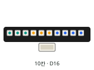 | WS2813 LED 바 10칸 · Grove 케이블 | 상태 표시 | 각 1 | 본 교재 기본 부품 | |
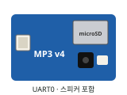 | Grove MP3 v4.0 + 스피커 + MP3용 microSD | 말하기 | 각 1 | 디바이스마트 | 말하기 장(ML+)에서 쓰던 것. 없으면 링크에서 구입(스피커 포함, 해외 재고 1주일) |
| 현장 설치 (참고 추천) | |||||
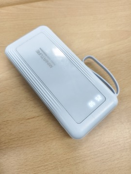 | Always On 보조배터리 (예: Voltaic V25) | 밖에서 전원 | 1 | 제조사 | 저전류에서 꺼지지 않는 제품 |
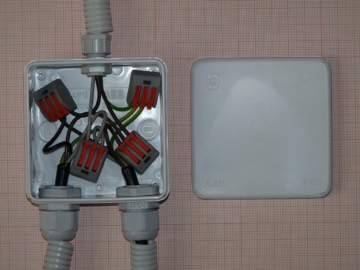 | 방수 케이스 (예: Coms BD983, IP65) | 비·먼지 막기 | 1 | 디바이스마트 | 구멍을 내면 방수 등급이 유지되지 않아요 |
사진 출처
- Raspberry_Pi_Pico_WH_top_and_bottom_with_soldered_pins.jpg · Spageektti · CC BY-SA 4.0 · 사진은 Pico WH예요. 피코 2 WH와 생김새가 거의 같아요
- Female-Female_Jumper_Wire.jpg · oomlout · CC BY-SA 2.0 · 예시 사진
- Micro_SD_Card_32_GB.jpg · Ypsilon from Finland · CC0 1.0 · 예시 사진
- KTS_CR1220_Lithium_coin_cell_battery-9622.jpg · Raimond Spekking · CC BY-SA 4.0
- SD_card_reader.jpg · Dineshkumar Nallaveerappan · CC BY-SA 4.0 · 예시 사진
- Power_Bank_20kmAh.jpg · Zamryoung · CC BY 4.0 · 예시 사진. Always On 기능은 제품 설명에서 확인해요
- IP65_junction_box.JPG · Dmitry G · CC BY-SA 3.0 · 예시 사진
표의 링크는 디바이스마트 상품이에요. 가격과 재고는 주문할 때 다시 확인해야 해요. WS2813 LED, Grove MP3 v4와 스피커는 앞 장에서 쓰던 것을 그대로 써요. 보조배터리와 방수 케이스는 현장 설치 단계에서만 필요하고, 제품은 참고용 추천이에요. 보조배터리는 전기를 적게 쓰면 저절로 꺼지는 제품이 많아서 Always On 기능이 있는 제품을 권해요.
조립 전에 전체 모습 보기
그림 1. 전체 연결. I2C1·A0·A1·UART1은 비워 두어요. UART1은 SPI0 헤더와 핀을 함께 써요.
조립 ① 쉴드 스위치와 microSD
쉴드 모서리의 전원 스위치를 5V로 둬요. MP3 모듈이 5V가 아니면 켜지지 않기 때문이에요. 마이크와 microSD 모듈은 3.3V 전용이지만, 스위치와 상관없이 늘 3.3V가 나오는 자리(A2 포트, SPI0 헤더)에 연결하므로 5V여도 안전해요. microSD 모듈은 쉴드 왼쪽 아래의 SPI0 헤더에 10cm 암-암 점퍼선 6가닥으로 연결해요. 헤더는 보드의 글씨가 바로 읽히는 방향에서 봐요. 윗줄은 SCK·TX·RX, 아랫줄은 GND·3V3·CS예요. 모듈 쪽은 핀 번호 1~6번 줄만 쓰고, 선마다 양 끝의 이름을 확인하며 꽂아요.
그림 2. SPI0 헤더 → Pmod MicroSD 신호 연결. J1은 2줄 12핀이에요. 1번 표시가 있는 줄의 1~6번만 쓰고 7~12번 줄은 비워요. 선 색은 제품마다 다를 수 있으니 양 끝의 이름으로 확인해요.
- USB 분리PC·보조배터리 USB 케이블이 모두 빠져 있는지 확인해요.
- 스위치 5V쉴드 모서리 스위치를 5V 쪽으로 밀어요.
- SCK → SCK(4번)헤더 윗줄 왼쪽
- TX → MOSI(2번)헤더 윗줄 가운데
- RX → MISO(3번)헤더 윗줄 오른쪽
- CS → ~CS(1번)헤더 아랫줄 오른쪽
- 3V3 → VCC(6번)헤더 아랫줄 가운데
- GND → GND(5번)헤더 아랫줄 왼쪽
조립 ② 마이크
마이크는 Grove-암 점퍼 변환 케이블 두 개로 D20 포트와 A2 포트에 연결해요. D20은 소리를 재는 박자 신호 두 개(SCK, WS)를 맡고, A2는 소리 데이터(SD)와 3.3V 전원을 맡아요. 두 케이블에서 쓰지 않는 선이 하나씩 있어요. D20 케이블의 빨강과 A2 케이블의 흰색이에요. 쓰지 않는 두 선은 끝을 절연 테이프로 따로따로 감아요. 전원이나 신호가 흐르는 선이라 서로 닿거나 금속에 닿으면 안 되기 때문이에요. 모듈에 인쇄된 핀 이름(SCK, WS, SD, VDD, GND, L/R)을 보고 꽂아요. L/R은 GND에 연결해요.
그림 3. D20·A2 → INMP441 신호 연결. 모듈의 핀 순서는 제품마다 다를 수 있으니 모듈에 인쇄된 이름을 보고 꽂아요. 케이블 A의 빨강, 케이블 B의 흰색은 절연하고 어디에도 꽂지 않아요.
조립 ③ 시계·MP3·LED·버튼
시계(DS3231)는 Grove–STEMMA QT 케이블로 I2C0 포트에 꽂고, 뒷면에 CR1220 동전 전지를 넣어요. 전지가 있어야 전원을 뽑아도 시각이 유지돼요. MP3 모듈은 앞 장과 같이 UART0 포트에 꽂고 스피커를 연결해요. MP3 모듈에 넣는 microSD에는 아래 음성 파일 0001.mp3를 복사해요. 이 SD는 녹음용 SD와 다른 카드예요. LED는 D16, 버튼은 D18 포트예요.
① 카드를 FAT32로 포맷해요. Windows는 카드 우클릭 → 포맷 → FAT32, Mac은 디스크 유틸리티 → 지우기 → MS-DOS(FAT)예요. 32GB 이하 카드가 편해요.
② 위 파일
0001.mp3를 카드 맨 위 폴더에 복사해요. 다른 새 이름은 ML3장에서 이어서 넣어요.③ Mac에서 복사했다면 터미널에서
dot_clean /Volumes/카드이름을 실행해 숨김 파일을 지워요. 숨김 파일이 있으면 번호가 한 칸씩 밀려요.④ 엉뚱한 음성이 나오면 카드를 다시 포맷하고 ②부터 다시 해요.
- 시계DS3231 → I2C0 (Grove–STEMMA QT 케이블), 뒷면에 CR1220
- MP3Grove MP3 v4.0 → UART0(말하기 장과 같아요). 스피커는 모듈의 스피커 단자에 꽂고, 위에서 준비한 microSD를 넣어요. 녹음용 카드와 다른 카드예요.
- LEDWS2813 → D16
- 버튼Grove 버튼 → D18
전체 연결 확인
그림 1과 비교하며 확인해요
- 쉴드 스위치가 5V에 있다
- SPI0 헤더 6가닥이 SD 모듈 1~6번 핀과 이름대로 맞다
- 마이크 케이블 A는 D20, B는 A2에 꽂혀 있고, 쓰지 않는 두 선이 절연되어 있다
- 시계 I2C0, MP3 UART0, LED D16, 버튼 D18
- 녹음용 SD와 MP3용 SD가 각각 꽂혀 있다
- 모두 확인한 뒤 마지막에 PC USB를 연결했다
프로그램 준비
펌웨어는 앞 장과 같은 MicroPython v1.28.0을 써요. 피코에 파일 두 개를 먼저 저장해요. SD 카드를 다루는 sdcard.py와 이 장의 공통 도구 eco_lib.py예요. Thonny에서 코드를 붙여 넣고 '다른 이름으로 저장'에서 Raspberry Pi Pico를 고른 뒤 이름을 정확히 적어요. 그 뒤의 실험 코드들은 편집기에 붙여 넣고 실행 버튼으로 돌려요. 공통 도구를 불러 쓰므로 짧아요.
RPI_PICO2_W)이 설치되어 있어야 해요. Thonny 오른쪽 아래에서 MicroPython (Raspberry Pi Pico)를 고르고, 셸에 >>>가 표시되면 연결된 거예요. 설치 방법은 0장에 있어요.sdcard.py (micropython-lib, MIT 라이선스) · 피코에 이 이름으로 저장 · 315줄 · 펼쳐서 복사
"""
MicroPython driver for SD cards using SPI bus.
Requires an SPI bus and a CS pin. Provides readblocks and writeblocks
methods so the device can be mounted as a filesystem.
Example usage on pyboard:
import pyb, sdcard, os
sd = sdcard.SDCard(pyb.SPI(1), pyb.Pin.board.X5)
pyb.mount(sd, '/sd2')
os.listdir('/')
Example usage on ESP8266:
import machine, sdcard, os
sd = sdcard.SDCard(machine.SPI(1), machine.Pin(15))
os.mount(sd, '/sd')
os.listdir('/')
"""
from micropython import const
import time
_CMD_TIMEOUT = const(100)
_R1_IDLE_STATE = const(1 << 0)
# R1_ERASE_RESET = const(1 << 1)
_R1_ILLEGAL_COMMAND = const(1 << 2)
# R1_COM_CRC_ERROR = const(1 << 3)
# R1_ERASE_SEQUENCE_ERROR = const(1 << 4)
# R1_ADDRESS_ERROR = const(1 << 5)
# R1_PARAMETER_ERROR = const(1 << 6)
_TOKEN_CMD25 = const(0xFC)
_TOKEN_STOP_TRAN = const(0xFD)
_TOKEN_DATA = const(0xFE)
def _crc7(buf, n):
crc = 0
for i in range(n):
crc ^= buf[i]
for j in range(8):
crc = ((crc << 1) ^ (0x12 * (crc >> 7))) & 0xFF
return crc
class SDCard:
def __init__(self, spi, cs, baudrate=1320000):
self.spi = spi
self.cs = cs
self.cmdbuf = bytearray(6)
self.dummybuf = bytearray(512)
self.tokenbuf = bytearray(1)
for i in range(512):
self.dummybuf[i] = 0xFF
self.dummybuf_memoryview = memoryview(self.dummybuf)
# initialise the card
self.init_card(baudrate)
def init_spi(self, baudrate):
try:
master = self.spi.MASTER
except AttributeError:
# on ESP8266
self.spi.init(baudrate=baudrate, phase=0, polarity=0)
else:
# on pyboard
self.spi.init(master, baudrate=baudrate, phase=0, polarity=0)
def init_card(self, baudrate):
# init CS pin
self.cs.init(self.cs.OUT, value=1)
# init SPI bus; use low data rate for initialisation
self.init_spi(100000)
# clock card at least 100 cycles with cs high
for i in range(16):
self.spi.write(b"\xff")
# CMD0: init card; should return _R1_IDLE_STATE (allow 5 attempts)
for _ in range(5):
if self.cmd(0, 0) == _R1_IDLE_STATE:
break
else:
raise OSError("no SD card")
# CMD8: determine card version
r = self.cmd(8, 0x01AA, 4)
if r == _R1_IDLE_STATE:
self.init_card_v2()
elif r == (_R1_IDLE_STATE | _R1_ILLEGAL_COMMAND):
self.init_card_v1()
else:
raise OSError("couldn't determine SD card version")
# get the number of sectors
# CMD9: response R2 (R1 byte + 16-byte block read)
if self.cmd(9, 0, 0, False) != 0:
raise OSError("no response from SD card")
csd = bytearray(16)
self.readinto(csd)
if csd[0] & 0xC0 == 0x40: # CSD version 2.0
self.sectors = ((csd[7] << 16 | csd[8] << 8 | csd[9]) + 1) * 1024
elif csd[0] & 0xC0 == 0x00: # CSD version 1.0 (old, <=2GB)
c_size = (csd[6] & 0b11) << 10 | csd[7] << 2 | csd[8] >> 6
c_size_mult = (csd[9] & 0b11) << 1 | csd[10] >> 7
read_bl_len = csd[5] & 0b1111
capacity = (c_size + 1) * (2 ** (c_size_mult + 2)) * (2**read_bl_len)
self.sectors = capacity // 512
else:
raise OSError("SD card CSD format not supported")
# print('sectors', self.sectors)
# CMD16: set block length to 512 bytes
if self.cmd(16, 512) != 0:
raise OSError("can't set 512 block size")
# set to high data rate now that it's initialised
self.init_spi(baudrate)
def init_card_v1(self):
for i in range(_CMD_TIMEOUT):
time.sleep_ms(50)
self.cmd(55, 0)
if self.cmd(41, 0) == 0:
# SDSC card, uses byte addressing in read/write/erase commands
self.cdv = 512
# print("[SDCard] v1 card")
return
raise OSError("timeout waiting for v1 card")
def init_card_v2(self):
for i in range(_CMD_TIMEOUT):
time.sleep_ms(50)
self.cmd(58, 0, 4)
self.cmd(55, 0)
if self.cmd(41, 0x40000000) == 0:
self.cmd(58, 0, -4) # 4-byte response, negative means keep the first byte
ocr = self.tokenbuf[0] # get first byte of response, which is OCR
if not ocr & 0x40:
# SDSC card, uses byte addressing in read/write/erase commands
self.cdv = 512
else:
# SDHC/SDXC card, uses block addressing in read/write/erase commands
self.cdv = 1
# print("[SDCard] v2 card")
return
raise OSError("timeout waiting for v2 card")
def cmd(self, cmd, arg, final=0, release=True, skip1=False):
self.cs(0)
# create and send the command
buf = self.cmdbuf
buf[0] = 0x40 | cmd
buf[1] = arg >> 24
buf[2] = arg >> 16
buf[3] = arg >> 8
buf[4] = arg
buf[5] = _crc7(buf, 5) | 0x01 # ensure stop bit is always set
self.spi.write(buf)
if skip1:
self.spi.readinto(self.tokenbuf, 0xFF)
# wait for the response (response[7] == 0)
for i in range(_CMD_TIMEOUT):
self.spi.readinto(self.tokenbuf, 0xFF)
response = self.tokenbuf[0]
if not (response & 0x80):
# this could be a big-endian integer that we are getting here
# if final<0 then store the first byte to tokenbuf and discard the rest
if final < 0:
self.spi.readinto(self.tokenbuf, 0xFF)
final = -1 - final
for j in range(final):
self.spi.write(b"\xff")
if release:
self.cs(1)
self.spi.write(b"\xff")
return response
# timeout
self.cs(1)
self.spi.write(b"\xff")
return -1
def readinto(self, buf):
self.cs(0)
# read until start byte (0xff)
for i in range(_CMD_TIMEOUT):
self.spi.readinto(self.tokenbuf, 0xFF)
if self.tokenbuf[0] == _TOKEN_DATA:
break
time.sleep_ms(1)
else:
self.cs(1)
raise OSError("timeout waiting for response")
# read data
mv = self.dummybuf_memoryview
if len(buf) != len(mv):
mv = mv[: len(buf)]
self.spi.write_readinto(mv, buf)
# read checksum
self.spi.write(b"\xff")
self.spi.write(b"\xff")
self.cs(1)
self.spi.write(b"\xff")
def write(self, token, buf):
self.cs(0)
# send: start of block, data, checksum
self.spi.read(1, token)
self.spi.write(buf)
self.spi.write(b"\xff")
self.spi.write(b"\xff")
# check the response
if (self.spi.read(1, 0xFF)[0] & 0x1F) != 0x05:
self.cs(1)
self.spi.write(b"\xff")
return
# wait for write to finish
while self.spi.read(1, 0xFF)[0] == 0:
pass
self.cs(1)
self.spi.write(b"\xff")
def write_token(self, token):
self.cs(0)
self.spi.read(1, token)
self.spi.write(b"\xff")
# wait for write to finish
while self.spi.read(1, 0xFF)[0] == 0x00:
pass
self.cs(1)
self.spi.write(b"\xff")
def readblocks(self, block_num, buf):
# workaround for shared bus, required for (at least) some Kingston
# devices, ensure MOSI is high before starting transaction
self.spi.write(b"\xff")
nblocks = len(buf) // 512
assert nblocks and not len(buf) % 512, "Buffer length is invalid"
if nblocks == 1:
# CMD17: set read address for single block
if self.cmd(17, block_num * self.cdv, release=False) != 0:
# release the card
self.cs(1)
raise OSError(5) # EIO
# receive the data and release card
self.readinto(buf)
else:
# CMD18: set read address for multiple blocks
if self.cmd(18, block_num * self.cdv, release=False) != 0:
# release the card
self.cs(1)
raise OSError(5) # EIO
offset = 0
mv = memoryview(buf)
while nblocks:
# receive the data and release card
self.readinto(mv[offset : offset + 512])
offset += 512
nblocks -= 1
if self.cmd(12, 0, skip1=True):
raise OSError(5) # EIO
def writeblocks(self, block_num, buf):
# workaround for shared bus, required for (at least) some Kingston
# devices, ensure MOSI is high before starting transaction
self.spi.write(b"\xff")
nblocks, err = divmod(len(buf), 512)
assert nblocks and not err, "Buffer length is invalid"
if nblocks == 1:
# CMD24: set write address for single block
if self.cmd(24, block_num * self.cdv) != 0:
raise OSError(5) # EIO
# send the data
self.write(_TOKEN_DATA, buf)
else:
# CMD25: set write address for first block
if self.cmd(25, block_num * self.cdv) != 0:
raise OSError(5) # EIO
# send the data
offset = 0
mv = memoryview(buf)
while nblocks:
self.write(_TOKEN_CMD25, mv[offset : offset + 512])
offset += 512
nblocks -= 1
self.write_token(_TOKEN_STOP_TRAN)
def ioctl(self, op, arg):
if op == 4: # get number of blocks
return self.sectors
if op == 5: # get block size in bytes
return 512eco_lib.py · 피코에 이 이름으로 저장 · 344줄 · 펼쳐서 복사
# eco_lib.py — 물까치 찾는 피코 공통 도구
# 피코에 이 이름(eco_lib.py) 그대로 한 번 저장해 두면, 이 챕터의 모든 코드가 이 파일을 불러 씁니다.
# 핀 배치: 마이크 D20(GP20·GP21) + A2(GP28) · microSD SPI0 헤더(GP2~GP5) · 시계 I2C0(GP9·GP8)
# MP3 UART0(GP0·GP1) · LED D16 · 버튼 D18
from machine import I2S, SPI, I2C, UART, Pin
from neopixel import NeoPixel
from array import array
import sdcard, os, vfs, errno, struct, time, math, gc
RATE = 16000 # 1초에 16000번 소리를 재요. 특징 계산이 이 값에 맞춰져 있으니 바꾸지 않아요
IBUF = 64000 # 마이크 내부 버퍼. 16kHz에서 약 0.5초 분량이에요
np = NeoPixel(Pin(16), 10, timing=(280, 515, 515, 745))
btn = Pin(18, Pin.IN)
i2c = I2C(0, scl=Pin(9), sda=Pin(8), freq=100_000)
# ---------- LED · 버튼 ----------
def led(c, n=10):
for i in range(10): np[i] = c if i < n else (0, 0, 0)
np.write()
def error_blink(times=6): # 전원만 연결해 실행할 때 문제가 생기면 빨간 불이 깜빡여요
for _ in range(times):
led((40, 0, 0)); time.sleep(0.25); led((0, 0, 0)); time.sleep(0.25)
_stop = [False]
def _pressed(pin): # 3초 듣기나 계산 중에 짧게 눌러도 놓치지 않게 기억해 둬요
_stop[0] = True
btn.irq(trigger=Pin.IRQ_RISING, handler=_pressed)
def stop_reset():
_stop[0] = False
def want_stop(): # 버튼을 한 번이라도 누르면 '멈춤'을 계속 기억해요. 하던 기록은 마치고 끝나요
if btn.value() == 1: _stop[0] = True
return _stop[0]
# ---------- microSD ----------
def sd_mounted():
for _, point in vfs.mount():
if point == "/sd": return True
return False
def sd_open(): # SD 카드를 /sd에 연결하고 /sd/eco 폴더를 준비. 이번에 새로 연결했으면 True
new = False
try:
if not sd_mounted():
spi = SPI(0, baudrate=1_000_000, sck=Pin(2), mosi=Pin(3), miso=Pin(4))
card = sdcard.SDCard(spi, Pin(5, Pin.OUT), baudrate=10_000_000)
vfs.mount(card, "/sd"); new = True
try:
os.mkdir("/sd/eco")
except OSError as e:
if e.args[0] != errno.EEXIST: raise
return new
except:
if new: vfs.umount("/sd")
raise
def remove_quiet(path): # 파일이 있으면 지우고, 없으면 그냥 넘어가요
try:
os.remove(path)
except OSError as e:
if e.args[0] != errno.ENOENT: raise
def log(name, header, line): # /sd/eco/name 에 한 줄 추가. 처음이면 제목 줄부터
new = name not in os.listdir("/sd/eco")
with open("/sd/eco/" + name, "a") as f:
if new: f.write(header + "\n")
f.write(line + "\n")
# ---------- 시계 DS3231 ----------
def _b2d(v):
if (v & 15) > 9 or (v >> 4) > 9:
raise ValueError("시계 값이 이상해요. ⓪ 부품 확인으로 시계를 다시 맞추세요")
return (v >> 4) * 10 + (v & 15)
def _d2b(v):
return ((v // 10) << 4) | (v % 10)
def clock_set_from_pico(): # Thonny가 맞춰 둔 피코 시각을 DS3231에 옮겨 적어요
y, mo, d, h, mi, s, wd, _ = time.localtime()
if not 2025 <= y <= 2099:
raise ValueError("피코 시각이 맞춰져 있지 않아요. Thonny로 연결한 상태에서 실행하세요")
i2c.writeto_mem(0x68, 0x00, bytes([_d2b(s), _d2b(mi), _d2b(h), _d2b(wd + 1), _d2b(d), _d2b(mo), _d2b(y - 2000)]))
st = i2c.readfrom_mem(0x68, 0x0F, 1)[0]
i2c.writeto_mem(0x68, 0x0F, bytes([st & 0x7F])) # '시계가 멈춘 적 있음' 표시 지우기
def clock_now(): # (년, 월, 일, 시, 분, 초)
if i2c.readfrom_mem(0x68, 0x0F, 1)[0] & 0x80:
raise ValueError("시계가 멈춘 적이 있어요. ⓪ 부품 확인으로 시계를 다시 맞추세요")
r = i2c.readfrom_mem(0x68, 0x00, 7)
if r[2] & 0x40: # 12시간제로 설정된 시계
h = _b2d(r[2] & 0x1F) % 12 + (12 if r[2] & 0x20 else 0)
else:
h = _b2d(r[2] & 0x3F)
y = 2000 + _b2d(r[6]) + (100 if r[5] & 0x80 else 0)
mo = _b2d(r[5] & 0x1F); d = _b2d(r[4]); mi = _b2d(r[1] & 0x7F); s = _b2d(r[0] & 0x7F)
if not (2025 <= y <= 2099 and 1 <= mo <= 12 and 1 <= d <= 31 and 0 <= h <= 23 and 0 <= mi <= 59 and 0 <= s <= 59):
raise ValueError("시계의 날짜나 시각이 이상해요. ⓪ 부품 확인으로 시계를 다시 맞추세요")
return (y, mo, d, h, mi, s)
def stamp(): # 파일 이름용 "20261001_071502"
return "%04d%02d%02d_%02d%02d%02d" % clock_now()
def when(): # 기록용 "2026-10-01 07:15:02"
return "%04d-%02d-%02d %02d:%02d:%02d" % clock_now()
# ---------- 마이크 INMP441 ----------
def mic_open():
return I2S(0, sck=Pin(20), ws=Pin(21), sd=Pin(28),
mode=I2S.RX, bits=32, format=I2S.MONO, rate=RATE, ibuf=IBUF)
PIECE = 1600 # 0.1초 조각
PIECES = 30 # 3초 = 조각 30개
TOP = 8 # 특징을 계산할 큰 소리 조각 수 (메모리를 아끼려고 8개만 남겨요)
_piece = bytearray(PIECE * 4); _pmv = memoryview(_piece)
small = bytearray(512 * 4) # 소리 크기용 512개 = 약 0.03초
def _rms(buf, count): # 앞쪽 count개로 소리 크기(RMS) 계산. 교재 소리 챕터와 같은 식
v = struct.unpack("<%di" % count, buf[:count * 4])
m = 0
for x in v: m += x >> 16
m /= count; s = 0.0
for x in v:
d = (x >> 16) - m; s += d * d
return math.sqrt(s / count)
def level(audio):
audio.readinto(small)
return _rms(small, 512)
def baseline(audio): # 조용할 때의 크기 (25번 잰 값의 중앙값)
for _ in range(8): level(audio) # 켜진 직후 튀는 값은 버려요
bg = sorted(level(audio) for _ in range(25))
return bg[len(bg) // 2]
def drain(audio, seconds): # 버튼을 보며 seconds초 기다려요. 그동안 쌓이는 소리는 읽어서 버려요
t0 = time.ticks_ms()
while time.ticks_diff(time.ticks_ms(), t0) < seconds * 1000 and not want_stop():
audio.readinto(_pmv)
# ---------- 3초 듣기 ----------
def wav_head(n): # 32비트 모노 16kHz WAV 머리말 (n = 소리 데이터 바이트 수)
return (b"RIFF" + struct.pack("<I", 36 + n) + b"WAVE" + b"fmt " +
struct.pack("<IHHIIHH", 16, 1, 1, RATE, RATE * 4, 4, 32) + b"data" + struct.pack("<I", n))
def listen3(audio, thresh, path=None, prefix=None):
# 3초를 들어요. prefix에 소리를 감지한 조각(small)을 주면 그 조각부터 3초에 넣어요.
# path를 주면 그 3초를 WAV로 저장해요. 중간에 실패하면 불완전한 파일을 지워요.
# 돌려주는 값: (특징을 계산할 큰 소리 조각들의 바이트 목록, 소리가 기준보다 컸던 조각의 비율)
top = []; loud = 0; f = None; done = False
try:
if path:
f = open(path, "wb")
if f.write(wav_head(0)) != 44: raise OSError("WAV 머리말을 쓰지 못했어요")
for j in range(PIECES):
if j == 0 and prefix is not None:
_piece[:len(prefix)] = prefix
n = audio.readinto(_pmv[len(prefix):]); want = len(_piece) - len(prefix)
else:
n = audio.readinto(_pmv); want = len(_piece)
if n != want: raise OSError("마이크에서 소리를 다 읽지 못했어요")
if f and f.write(_pmv) != len(_piece): raise OSError("SD 카드에 소리를 다 쓰지 못했어요")
lv = _rms(_piece, 512)
if lv > thresh: loud += 1
if len(top) < TOP or lv > top[-1][0]:
top.append((lv, bytes(_piece)))
top.sort(key=lambda t: -t[0])
if len(top) > TOP: top.pop()
if f:
f.seek(0)
if f.write(wav_head(PIECE * 4 * PIECES)) != 44: raise OSError("WAV 머리말을 고쳐 쓰지 못했어요")
done = True
finally:
if f: f.close()
if path and not done: remove_quiet(path)
keep = [b for lv, b in top if lv > thresh]
if len(keep) < 2: keep = [b for lv, b in top[:2]]
return keep, loud / PIECES
# ---------- 특징: 12개 주파수 대역의 에너지 모양 ----------
BANDS = [300, 404, 545, 734, 990, 1334, 1797, 2422, 3264, 4399, 5929, 7500] # 대역 가운데 주파수(Hz)
LENS = [max(8, int(2 * RATE / max(120, int(c * 0.35)))) for c in BANDS] # 대역 폭에 맞춘 블록 길이
WINS = [array("f", [0.5 - 0.5 * math.cos(2 * math.pi * (i + 0.5) / L) for i in range(L)]) for L in LENS]
KS = [2 * math.cos(2 * math.pi * f / RATE) for f in BANDS]
def _band(x, k, L, w): # 짧게 끊어 Goertzel 계산을 반복하고 평균 → 대역 에너지
p = 0.0; nb = 0
for s in range(0, len(x) - L + 1, L):
s1 = 0.0; s2 = 0.0
for i in range(L):
s0 = x[s + i] * w[i] + k * s1 - s2; s2 = s1; s1 = s0
p += s1 * s1 + s2 * s2 - k * s1 * s2; nb += 1
return p / (nb * L * L)
def shape12(raw): # 0.1초 조각 하나 → 소리 크기와 상관없는 스펙트럼 모양 12개
v = struct.unpack("<%di" % PIECE, raw)
m = 0
for t in v: m += t >> 16
m /= PIECE
x = array("f", [(t >> 16) - m for t in v])
e = [max(_band(x, k, L, w), 0.0) for k, L, w in zip(KS, LENS, WINS)]; tot = sum(e) + 1e-9
return [math.log(ei / tot + 1e-6) for ei in e]
def features3(pieces, active): # 3초 특징 25개 = 조각들의 모양 평균 12 + 흔들림 12 + 소리 난 비율 1
fs = [shape12(b) for b in pieces]; n = len(fs)
mu = [sum(f[i] for f in fs) / n for i in range(12)]
sd = [math.sqrt(sum((f[i] - mu[i]) ** 2 for f in fs) / n) for i in range(12)]
return array("f", mu + sd + [active])
def features3_timed(pieces, active): # 특징 계산 시간과 남은 메모리를 함께 알려 줘요 (⓪ 부품 확인용)
gc.collect(); t0 = time.ticks_ms()
r = features3(pieces, active)
ms = time.ticks_diff(time.ticks_ms(), t0); gc.collect()
return r, ms, gc.mem_free()
# ---------- 예시와 k-NN ----------
EXAMPLES = "/sd/eco/examples.csv"
MAX_EXAMPLES = 300 # 예시 수 상한 (피코 메모리 때문)
EX_HEADER = ",".join("f%d" % i for i in range(25)) + ",label"
def save_example(feat, label):
log("examples.csv", EX_HEADER, ",".join("%.4f" % v for v in feat) + "," + label)
def knn_load(k): # 예시를 읽어, 가까운 예시 k개의 라벨별 표를 세는 함수를 돌려줘요
rows = []; cnt = {}
with open(EXAMPLES) as f:
for ln in f:
p = ln.strip().split(",")
if len(p) == 26 and p[25] != "label":
rows.append((array("f", [float(v) for v in p[:25]]), p[25]))
cnt[p[25]] = cnt.get(p[25], 0) + 1
if len(rows) > MAX_EXAMPLES:
raise ValueError("예시가 %d개예요. 피코 메모리를 생각해 %d개 이하로 줄이세요" % (len(rows), MAX_EXAMPLES))
if len(cnt) < 2 or min(cnt.values()) < 3 or len(rows) < k:
raise ValueError("예시가 부족해요 %s. 두 종류 이상, 종류마다 3개 이상, 모두 %d개 이상 모으세요" % (cnt, k))
lo = array("f", [min(r[0][i] for r in rows) for i in range(25)])
sc = array("f", [1 / (max(r[0][i] for r in rows) - lo[i] + 1e-9) for i in range(25)])
for f, _ in rows:
for i in range(25): f[i] = (f[i] - lo[i]) * sc[i]
gc.collect()
def votes(feat): # {라벨: 표 수}
q = [(feat[i] - lo[i]) * sc[i] for i in range(25)]
best = []
for f, lab in rows:
d = 0.0
for i in range(25):
t = f[i] - q[i]; d += t * t
if len(best) < k or d < best[-1][0]:
best.append((d, lab)); best.sort(key=lambda t: t[0])
if len(best) > k: best.pop()
v = {}
for _, lab in best: v[lab] = v.get(lab, 0) + 1
return v
return votes, cnt
# ---------- MP3 말하기 (Grove MP3 v4.0 · UART0) ----------
_uart = [None]
def mp3_open(volume=22): # 모듈이 켜질 시간을 1초 기다려요. 쉴드 전원 스위치는 5V여야 해요
_uart[0] = UART(0, baudrate=115200, tx=Pin(0), rx=Pin(1))
time.sleep(1.0)
_uart[0].write(("AT+VOL=%d\r\n" % volume).encode()); time.sleep(0.1)
def say(audio, track, seconds=2.5): # track번 MP3를 틀고, 말하는 동안에는 귀를 닫아요(자기 목소리를 다시 듣지 않게)
if _uart[0] is None: return
_uart[0].write(("AT+PLAY=sd0,%d\r\n" % track).encode())
drain(audio, seconds)
# ---------- 구글 시트로 보내기 (선택) ----------
def wifi_connect(): # wifi_config.py의 이름·비밀번호로 연결 (교재 1장과 같은 파일)
import network
try:
from wifi_config import WIFI_SSID, WIFI_PASSWORD
except ImportError:
print("wifi_config.py가 없어요. 교재 1장처럼 먼저 저장하세요"); return False
w = network.WLAN(network.STA_IF); w.active(True)
if not w.isconnected():
w.connect(WIFI_SSID, WIFI_PASSWORD)
for _ in range(40):
if w.isconnected(): break
time.sleep(0.5)
return w.isconnected()
def _https_get(url): # 교재 6장과 같은 방식 (설치할 것 없음)
import socket, ssl
host, _, path = url[8:].partition("/")
gc.collect(); s = socket.socket()
try:
s.connect(socket.getaddrinfo(host, 443)[0][-1])
ctx = ssl.SSLContext(ssl.PROTOCOL_TLS_CLIENT); ctx.verify_mode = ssl.CERT_NONE
s = ctx.wrap_socket(s, server_hostname=host)
s.write(("GET /%s HTTP/1.0\r\nHost: %s\r\nConnection: close\r\n\r\n" % (path, host)).encode())
buf = b""
while True:
c = s.read(512)
if not c: break
buf += c
return buf
finally:
s.close()
def _q(s): # 주소에 넣을 수 있게 바꾸기 (한글·공백 포함)
out = ""
for b in str(s).encode():
if (48 <= b <= 57) or (65 <= b <= 90) or (97 <= b <= 122) or b in b"-_.~":
out += chr(b)
else:
out += "%%%02X" % b
return out
def sheet_send(url, **values): # 구글 시트 웹 앱으로 한 줄 보내기. 실패해도 관측은 계속해요
try:
resp = _https_get(url + "?" + "&".join("%s=%s" % (k, _q(v)) for k, v in values.items()))
head = resp.split(b"\r\n\r\n", 1)[0]
if b" 302 " in head or b" 301 " in head: # 구글이 다른 주소로 넘기면 따라가기
for line in head.split(b"\r\n"):
if line.lower().startswith(b"location:"):
_https_get(line.split(b":", 1)[1].strip().decode()); break
return True
except Exception as e:
print("시트 전송 실패(관측은 계속):", e)
return False
# ---------- 마무리 ----------
def finish(audio, mounted_here=True): # 마이크 정리 → LED 끄기 → SD 분리. 하나가 실패해도 나머지는 꼭 해요
try:
if audio is not None: audio.deinit()
finally:
try:
led((0, 0, 0))
finally:
if sd_mounted(): vfs.umount("/sd") # 이전 실행에서 연결된 채 남아 있어도 분리해요
print("안전하게 끝났어요. 이제 전원을 뽑아도 됩니다.")⓪ 부품 확인
이 코드는 SD 카드, 시계, 마이크, MP3, 버튼, LED를 차례로 확인하고 결과를 한 줄씩 보여 줘요. 시계는 이때 컴퓨터 시각으로 맞춰져요. Thonny로 연결한 상태에서 실행해야 해요. ①·②·③·⑤는 화면의 OK를 확인하고, ④는 목소리를 직접 듣고 ⑥은 LED 색을 직접 본 뒤 넘어가요. 실패한 줄은 옆에 적힌 안내대로 배선을 다시 봐요.
# 물까치 찾기 ⓪ — 부품 확인과 시계 맞추기
# Thonny로 PC에 연결한 상태에서 실행하세요. ①~⑥이 모두 OK면 다음 단계로 갑니다.
# ⑦은 이 피코가 3초를 판단하는 데 걸리는 시간과 남은 메모리를 알려 줘요(기록해 두세요).
# 먼저 sdcard.py와 eco_lib.py가 피코에 저장되어 있어야 해요.
import eco_lib as E
import os, time
SET_CLOCK = True # True면 컴퓨터 시각을 시계(DS3231)에 옮겨 적어요. 한 번 맞춘 뒤에는 False로 바꿔도 돼요
def main():
E.stop_reset(); mounted = False; audio = None
try:
# ① SD 카드
try:
mounted = E.sd_open()
with open("/sd/eco/test.txt", "w") as f: f.write("hello eco")
with open("/sd/eco/test.txt") as f: ok = f.read() == "hello eco"
os.remove("/sd/eco/test.txt")
st = os.statvfs("/sd")
if ok: print("① SD 카드 OK 남은 공간 %.0f MB" % (st[1] * st[3] / 1048576))
else: print("① SD 카드 쓰고 읽은 내용이 달라요 → 카드를 다시 꽂아 보세요")
except Exception as e:
print("① SD 카드 실패:", e, "→ SPI0 헤더 6가닥, 카드 삽입, FAT32 포맷을 확인하세요")
# ② 시계
try:
if 0x68 not in E.i2c.scan():
print("② 시계 찾지 못함 → I2C0 포트와 Grove–STEMMA QT 케이블을 확인하세요")
else:
if SET_CLOCK: E.clock_set_from_pico()
print("② 시계 OK %s ← 지금 시각과 같은지 확인하세요" % E.when())
except Exception as e:
print("② 시계 실패:", e)
# ③ 마이크
audio = E.mic_open()
quiet = E.baseline(audio)
print("③ 마이크 조용할 때 크기 %.0f. 이제 3초 동안 박수를 쳐 보세요" % quiet)
t0 = time.ticks_ms(); loud = 0.0
while time.ticks_diff(time.ticks_ms(), t0) < 3000:
loud = max(loud, E.level(audio))
if loud > quiet * 3 + 30: print("③ 마이크 OK 박수 크기 %.0f" % loud)
else: print("③ 마이크 소리가 작아요(%.0f) → D20·A2 케이블과 L/R 선을 확인하세요" % loud)
# ④ MP3
E.mp3_open()
print("④ MP3 1번 파일을 틀어요. '물까치인가 봐요'가 들리면 OK")
E.say(audio, 1, 3)
# ⑤ 버튼
print("⑤ 버튼 5초 안에 버튼을 한 번 누르세요")
t0 = time.ticks_ms(); pressed = False
while time.ticks_diff(time.ticks_ms(), t0) < 5000:
if E.btn.value() == 1: pressed = True; break
time.sleep(0.01)
print("⑤ 버튼 OK" if pressed else "⑤ 버튼 눌림을 못 느꼈어요 → D18 포트를 확인하세요")
# ⑥ LED
for c in ((40, 0, 0), (0, 40, 0), (0, 0, 40)):
E.led(c); time.sleep(0.4)
print("⑥ LED 빨강 → 초록 → 파랑으로 켜졌다면 OK")
# ⑦ 판단 속도·메모리 (3초 듣고 특징 계산)
print("⑦ 판단 속도 3초 동안 아무 소리나 들려주세요")
pieces, active = E.listen3(audio, quiet * 2 + 20)
feat, ms, free = E.features3_timed(pieces, active)
print("⑦ 판단 속도 특징 계산 %d ms · 남은 메모리 %d KB · 조각 %d개" % (ms, free // 1024, len(pieces)))
finally:
E.finish(audio, mounted)
main()예상 화면
① SD 카드 OK 남은 공간 29810 MB ② 시계 OK 2026-10-01 07:15:03 ← 지금 시각과 같은지 확인하세요 ③ 마이크 조용할 때 크기 31. 이제 3초 동안 박수를 쳐 보세요 ③ 마이크 OK 박수 크기 2140 ④ MP3 1번 파일을 틀어요. '물까치인가 봐요'가 들리면 OK ⑤ 버튼 5초 안에 버튼을 한 번 누르세요 ⑤ 버튼 OK ⑥ LED 빨강 → 초록 → 파랑으로 켜졌다면 OK ⑦ 판단 속도 3초 동안 아무 소리나 들려주세요 ⑦ 판단 속도 특징 계산 ○○○ ms · 남은 메모리 ○○○ KB · 조각 8개 안전하게 끝났어요. 이제 전원을 뽑아도 됩니다.
① 물까치 예시 모으기
번호를 입력하면 피코가 3초 동안 듣고, 그 소리를 숫자 25개(특징)로 바꿔 이름표와 함께 저장해요. 소리 파일은 남기지 않아요. 이름표는 다섯 가지예요. 물까치, 다른 새, 말소리, 배경, 기타예요. 물까치만 모으면 모든 소리를 물까치라고 답하게 되므로, 헷갈릴 만한 소리도 함께 가르쳐야 해요. 물까치 소리는 학교에서 직접 듣는 것이 가장 좋고, 어려우면 휴대폰으로 물까치 녹음을 틀어 모아요. 이름표마다 10개 이상, 물까치는 15개 이상 모으는 것을 권해요. 말소리는 녹음에 동의한 자기 목소리로만 모아요.
# 물까치 찾기 ① — AI에게 가르칠 예시 모으기 (Thonny로 PC에 연결한 상태에서만 실행)
# 번호를 입력하면 피코가 3초 동안 들어요. 그 3초의 특징(숫자 25개)을 이름표와 함께 저장합니다.
# 소리 파일은 저장하지 않아요. 숫자만 남습니다.
# 물까치 소리는 우리 학교에서 직접 듣거나, 휴대폰으로 물까치 녹음을 틀어 모아요.
# 말소리는 녹음에 동의한 내 목소리로만 모아요.
import eco_lib as E
LABELS = {"1": "물까치", "2": "다른 새", "3": "말소리", "4": "배경", "5": "기타"} # 기타 = 차·문·발걸음 같은 생활 소리
def counts():
c = {}
try:
with open(E.EXAMPLES) as f:
for ln in f:
p = ln.strip().split(",")
if len(p) == 26 and p[25] != "label": c[p[25]] = c.get(p[25], 0) + 1
except OSError:
pass
return c
def main():
E.stop_reset(); mounted = False; audio = None
try:
mounted = E.sd_open()
audio = E.mic_open()
quiet = E.baseline(audio); thresh = quiet * 2 + 20
print("\n=== 예시 모으기 === (조용할 때 크기 %.0f)" % quiet)
for k, v in LABELS.items(): print(" %s = %s" % (k, v))
print(" s = 끝내기")
while True:
cmd = input("번호> ").strip()
if cmd == "s": break
name = LABELS.get(cmd)
if not name:
print(" ↑ 1~%d 또는 s" % len(LABELS)); continue
if sum(counts().values()) >= E.MAX_EXAMPLES:
print(" 예시가 %d개로 가득 찼어요. 피코 메모리 때문에 더 저장하지 않아요" % E.MAX_EXAMPLES); continue
E.drain(audio, 0.3) # 엔터 소리가 섞이지 않게 잠깐 쉬어요
print(" ▶ '%s' 소리를 들려주세요… (3초)" % name)
E.led((40, 25, 0))
pieces, active = E.listen3(audio, thresh)
E.led((0, 0, 20)); print(" 생각 중…")
E.save_example(E.features3(pieces, active), name)
E.led((0, 40, 0)); E.drain(audio, 0.3); E.led((0, 0, 0))
print(" 저장! 소리 난 비율 %d%% | 지금까지 %s" % (int(active * 100), counts()))
finally:
E.finish(audio, mounted)
main()s를 입력하면 끝나요. 저장할 때마다 셸에 이름표별 개수가 표시돼요. 예시는 녹음용 SD의 eco/examples.csv에 쌓이고, 피코 메모리 때문에 모두 300개까지만 저장해요.🔬 더 알아보기 — 숫자 25개는 무엇일까?
② 물까치 탐지기
소리가 기준보다 커지면 3초를 듣고, 모아 둔 예시 가운데 가장 가까운 9개(K_NN)를 찾아요. 그 9개 가운데 물까치 표가 MIN_VOTES(처음 값 3) 이상이면 물까치 후보로 판단해요. 후보면 스피커로 '물까치인가 봐요'를 말하고, 3초 WAV 파일과 시각을 SD의 found.csv에 남겨요. 후보가 아니면 3초 소리는 지우고 판단 결과만 decisions.csv에 남겨요. MP3를 재생하는 동안 들어온 소리는 읽어서 버리므로, 스피커 소리를 새 울음으로 다시 판단하지 않아요.
# 물까치 찾기 ② — 물까치 탐지기 (1단계 · 물까치인가, 아닌가)
# 소리가 나면 3초를 듣고, 모아 둔 예시와 비교해요. 가까운 예시 K_NN개 가운데 물까치가 MIN_VOTES개 이상이면
# MP3로 "물까치인가 봐요"라고 말하고, 그 3초를 WAV로, 시각을 CSV로 남깁니다.
# 물까치가 아니면 소리는 지우고 시각과 판단만 기록해요.
# 버튼(D18)을 누르면 안전하게 끝납니다. main.py로 저장하면 전원만 연결해도 자동으로 시작해요.
import eco_lib as E
import os
TARGET = "물까치"
K_NN = 9 # 가까운 예시 몇 개에게 물어볼까
MIN_VOTES = 3 # 그중 몇 표 이상이면 물까치라고 할까 (↑ 오판이 줄고 놓치는 게 늘어요, ↓ 반대)
K = 2.0 # 듣기 시작하는 크기 = 조용할 때 크기 × K + 20
COOLDOWN = 2 # 한 번 판단한 뒤 몇 초 쉴까
SAY_TRACK = 1 # MP3 모듈 SD 카드의 0001.mp3 = "물까치인가 봐요"
SHEET_URL = "" # 구글 시트 웹 앱 주소(.../exec). 비워 두면 보내지 않아요 (⑤ 참고)
def main():
if not (isinstance(K_NN, int) and K_NN >= 1 and isinstance(MIN_VOTES, int) and 1 <= MIN_VOTES <= K_NN):
raise ValueError("K_NN은 1 이상, MIN_VOTES는 1 이상 K_NN 이하의 정수여야 해요")
E.stop_reset(); mounted = False; audio = None
try:
mounted = E.sd_open()
votes, cnt = E.knn_load(K_NN)
if TARGET not in cnt: raise ValueError("예시에 '%s'가 없어요. ① 예시 모으기를 먼저 하세요" % TARGET)
print("예시를 불러왔어요:", cnt)
online = bool(SHEET_URL) and E.wifi_connect()
if SHEET_URL: print("구글 시트 전송", "켜짐" if online else "꺼짐(Wi-Fi 연결 실패)")
E.mp3_open()
audio = E.mic_open()
quiet = E.baseline(audio); thresh = quiet * K + 20
print("듣기 시작! (조용할 때 %.0f → 기준 %.0f) 끝내려면 버튼." % (quiet, thresh))
tmp = "/sd/eco/tmp.wav"; E.remove_quiet(tmp) # 지난번에 남은 임시 파일 정리
found = 0; E.led((0, 0, 3))
while not E.want_stop():
if E.level(audio) <= thresh: continue
E.led((30, 20, 0)) # 노랑 = 듣는 중
try:
pieces, active = E.listen3(audio, thresh, tmp, E.small) # 소리를 감지한 조각부터 3초
E.led((0, 0, 20)) # 파랑 = 생각 중
v = votes(E.features3(pieces, active)); n = v.get(TARGET, 0)
top = max(v, key=v.get); t = E.when()
if n >= MIN_VOTES:
found += 1
name = E.stamp() + "_mulkkachi.wav"
os.rename(tmp, "/sd/eco/" + name)
E.log("found.csv", "time,votes,active,file", "%s,%d,%.2f,%s" % (t, n, active, name))
E.led((0, 40, 20), n) # 청록 = 물까치 후보 (켜진 칸 수 = 표 수)
print("%s 물까치인가 봐요! (%d/%d표) → %s" % (t, n, K_NN, name))
E.say(audio, SAY_TRACK)
if online: E.sheet_send(SHEET_URL, time=t, label=TARGET, votes=n)
else:
print("%s 아니에요 (물까치 %d표, 가장 많은 표: %s)" % (t, n, top))
E.log("decisions.csv", "time,target_votes,top_label,active", "%s,%d,%s,%.2f" % (t, n, top, active))
finally:
E.remove_quiet(tmp) # 물까치가 아니면 소리는 남기지 않아요
E.drain(audio, COOLDOWN); E.led((0, 0, 3))
print("물까치 후보 %d번 찾았어요." % found)
finally:
E.finish(audio, mounted)
try:
main()
except Exception as e: # 전원만 연결했을 때도 알 수 있게 빨간 불을 켜 둬요
print("문제가 생겼어요:", e)
E.error_blink(); E.led((40, 0, 0))예상 화면
예시를 불러왔어요: {'물까치': 15, '다른 새': 12, '말소리': 10, '배경': 10, '기타': 10}
듣기 시작! (조용할 때 31 → 기준 82) 끝내려면 버튼.
2026-10-01 07:21:40 아니에요 (물까치 1표, 가장 많은 표: 말소리)
2026-10-01 07:22:15 물까치인가 봐요! (5/9표) → 20261001_072215_mulkkachi.wav
물까치 후보 1번 찾았어요.
안전하게 끝났어요. 이제 전원을 뽑아도 됩니다.③ 채점하고 기준 정하기
예시로 쓴 소리로 채점하면 점수가 실제보다 높게 나올 수 있어요. 그래서 예시로 쓰지 않은 소리를 탐지기에 직접 들려주어 채점해요. 휴대폰으로 물까치 녹음과 다른 소리를 하나씩 틀고, 무엇을 틀었는지 순서대로 적어 둬요. 탐지기가 남긴 decisions.csv에는 소리마다 물까치 표 수가 기록되어 있어요. 정답만 적어 두면 탐지기를 다시 돌리지 않고도 MIN_VOTES별 결과를 비교할 수 있어요. 재현율은 물까치 소리 가운데 물까치라고 한 비율이고, 오판은 다른 소리를 물까치라고 한 비율이에요. MIN_VOTES를 올리면 오판은 줄지만 놓치는 물까치가 늘어나요. 어디서 멈출지는 관측 목적에 따라 정해요.
- 소리 준비예시로 쓰지 않은 물까치 녹음 5개 이상, 다른 새와 생활 소리 5개 이상을 휴대폰에 준비해요. 3초쯤 되는 짧은 소리가 좋아요.
- 들려주기코드 ②를 켜 둔 채 하나씩 틀고, 소리 사이에는 10초쯤 쉬어요. 틀 때마다 시각과 무엇을 틀었는지 종이에 적어요.
- 정답 적기버튼으로 끝낸 뒤 녹음용 SD의
eco/decisions.csv를 PC로 옮겨 스프레드시트로 열어요. 맨 오른쪽에truth열을 만들고, 적어 둔 시각과time열을 맞춰 물까치면 1, 아니면 0을 적어 CSV로 저장해요. 소리 하나에 줄이 두 개 생기면 둘 다 같은 값을 적고, 줄이 없는 소리는 감지되지 않은 거예요. - 채점 도구 실행코드 ③을
decisions.csv와 같은 폴더에 저장하고,MAGPIE_PLAYED와OTHER_PLAYED에 틀어 준 물까치 수와 다른 소리 수를 적은 뒤 Thonny의 '이 컴퓨터의 Python'으로 실행해요. 설치할 것은 없어요. - 기준 정하기표를 보고 MIN_VOTES를 고른 뒤 코드 ②에 적어요.
코드 ③ · 채점 도구 (PC에서 실행 · 설치할 것 없음) · 41줄 · 펼쳐서 복사
# 물까치 찾기 ③ — 채점하고 기준 정하기 (PC에서 실행 · 설치할 것 없음)
# 피코 SD의 eco/decisions.csv(ML2 탐지기) 또는 eco/server.csv(ML3)를 이 파일과 같은 폴더에 두고,
# 스프레드시트로 열어 맨 오른쪽에 truth 열을 만들어요. 적어 둔 시각과 CSV의 time을 맞춰, 물까치를 튼 줄은 1, 나머지는 0을 적고 CSV로 저장해요.
# 틀어 준 소리가 탐지기에 아예 감지되지 않아 줄이 없을 수도 있어요. 아래 두 값에 실제로 틀어 준 횟수를 적으면
# 줄이 없는 물까치는 '놓친 물까치'로, 줄이 없는 다른 소리는 '물까치라고 하지 않은 소리'로 세요. (0이면 기록된 줄만으로 계산)
# 사용: Thonny의 '이 컴퓨터의 Python'으로 실행 (명령 창이라면 python eco_pc_compare.py decisions.csv)
import csv, os, sys
MAGPIE_PLAYED = 0 # 틀어 준 물까치 수
OTHER_PLAYED = 0 # 틀어 준 다른 소리 수
path = sys.argv[1] if len(sys.argv) > 1 else ("server.csv" if os.path.exists("server.csv") else "decisions.csv")
rows = []
with open(path, encoding="utf-8-sig") as f:
for r in csv.DictReader(f):
t = (r.get("truth") or "").strip()
if t not in ("0", "1") or r.get("birdnet") in ("서버 없음", "서버 오류"):
continue # 정답을 안 적었거나 서버에 묻지 못한 줄은 빼요
votes = int(r.get("target_votes") or r.get("pico_votes") or 0)
rows.append((t == "1", votes, r.get("best", ""), float(r.get("confidence") or 0)))
detected = sum(1 for t, *_ in rows if t)
P = max(detected, MAGPIE_PLAYED); N = max(len(rows) - detected, OTHER_PLAYED)
print("%s: 판정 %d줄 (물까치 %d · 다른 소리 %d)" % (os.path.basename(path), len(rows), detected, len(rows) - detected))
if P > detected or N > len(rows) - detected:
print("줄이 없는 재생 포함: 물까치 %d번 중 %d번, 다른 소리 %d번 중 %d번이 감지되지 않았어요" % (P, P - detected, N, N - (len(rows) - detected)))
if P == 0 or N == 0:
sys.exit("물까치(1)와 다른 소리(0)가 모두 있어야 비교할 수 있어요")
def score(rule): # (재현율, 오판)
hit = sum(1 for t, v, b, c in rows if t and rule(v, b, c))
fp = sum(1 for t, v, b, c in rows if not t and rule(v, b, c))
return hit / P, fp / N
print("\n방식 | 재현율 | 오판")
for m in range(1, 10):
print("피코만 MIN_VOTES %d | %.2f | %.2f" % ((m,) + score(lambda v, b, c, m=m: v >= m)))
if any(b for t, v, b, c in rows): # server.csv라면 BirdNET 방식도
for th in (0.10, 0.25, 0.50):
print("BirdNET만 신뢰도 %.2f | %.2f | %.2f" % ((th,) + score(lambda v, b, c, th=th: b == "물까치" and c >= th)))
print("피코 3표 → BirdNET %.2f | %.2f | %.2f" % ((th,) + score(lambda v, b, c, th=th: v >= 3 and b == "물까치" and c >= th)))
print("\n재현율 = 물까치 가운데 물까치라고 한 비율 · 오판 = 다른 소리를 물까치라고 한 비율")예상 화면 (교재를 만들 때 모의 시험: 물까치 8번, 다른 소리 14번)
decisions.csv: 판정 22줄 (물까치 8 · 다른 소리 14) 방식 | 재현율 | 오판 피코만 MIN_VOTES 1 | 1.00 | 0.93 피코만 MIN_VOTES 2 | 1.00 | 0.50 피코만 MIN_VOTES 3 | 0.62 | 0.36 피코만 MIN_VOTES 4 | 0.62 | 0.21 피코만 MIN_VOTES 5 | 0.38 | 0.07 …
④ 현장으로 — 배터리와 자동 시작
탐지기 코드를 main.py라는 이름으로 피코에 저장하면 PC 없이 전원만 연결해도 자동으로 시작해요. 이때는 화면이 없으므로 LED로 상태를 봐요. 문제가 생기면 빨간 불이 여러 번 깜빡여요. 끝낼 때는 버튼을 누르고 LED가 꺼진 뒤 전원을 뽑아요. 그래야 SD 카드의 파일이 망가지지 않아요. 사람이 대화하는 곳에는 설치하지 않아요. 공개되지 않은 대화를 녹음하는 것은 통신비밀보호법이 금지하며, 교실 수업 중 발언도 공개되지 않은 대화로 본 판결이 있어요. 설치 사실을 주변에 알려요.
- main.py로 저장코드 ②를 Thonny에서
main.py라는 이름으로 피코에 저장 - PC에서 한 번 확인USB를 뽑았다 꽂아 LED가 희미한 파랑으로 켜지는지 봐요
- 배터리로 바꾸기USB 케이블을 보조배터리에 연결
- 설치사람이 대화하지 않는 곳, 비를 피하는 곳. 설치 사실을 알림
- 끝내기버튼 → LED가 꺼지면 전원 분리 → SD 카드 회수
- 다시 실험하려면PC에 연결하고 Thonny의 정지 버튼을 누르면 탐지기가 멈추고 다른 코드를 실행할 수 있어요. 현장 관측을 마치고 자동 시작을 없애려면 피코의
main.py를 지우거나finder_saved.py로 이름을 바꿔요.
⑤ 물까치는 언제 나타났을까
SD 카드의 eco 폴더를 PC로 복사해 시간 그래프 코드를 돌리면 시간대별 물까치 후보 횟수 그래프가 만들어져요. 후보 횟수는 새의 수가 아니에요. 같은 무리가 여러 번 울 수 있고, 잘못 판단한 것도 섞여 있어요. 날짜별로 비교하거나 날씨·온도 기록과 나란히 놓고 볼 수 있어요.
- 안전하게 끝내기버튼을 눌러 LED가 꺼지면 USB 전원을 뽑아요.
- 카드 옮기기Pmod에서 녹음용 microSD를 빼 카드 리더로 PC에 연결하고, 카드의
eco폴더를 PC에 복사해요. - 그래프 그리기코드 ④를 복사한
eco폴더 옆에eco_pc_timeline.py로 저장하고, Thonny의 '이 컴퓨터의 Python'으로 실행해요.matplotlib는 도구 → 패키지 관리에서 설치해요. 그래프는eco/timeline_hour.png에 저장돼요.
코드 ④ · 시간 그래프 (PC에서 실행 · matplotlib 필요) · 34줄 · 펼쳐서 복사
# 물까치 찾기 ④ — 물까치가 언제 나타났을까? (컴퓨터의 파이썬으로 실행)
# 준비: pip install matplotlib · 사용: python eco_pc_timeline.py eco (SD 카드의 eco 폴더를 복사해 온 것)
# found.csv(물까치 후보 기록)와 decisions.csv(모든 판단 기록)를 읽어 시간대별 그래프를 그려요.
import csv, os, sys
from collections import Counter
import matplotlib
matplotlib.use("Agg")
import matplotlib.pyplot as plt
folder = sys.argv[1] if len(sys.argv) > 1 else "eco"
def read_rows(name): # 파일이 없으면(아직 한 번도 안 찾았으면) 빈 목록
path = os.path.join(folder, name)
if not os.path.exists(path): return []
with open(path, newline="", encoding="utf-8") as f: return list(csv.DictReader(f))
found = read_rows("found.csv"); allx = read_rows("decisions.csv")
print("물까치 후보 %d번 / 전체 판단 %d번" % (len(found), len(allx)))
hour = lambda r: int(r["time"][11:13])
day = lambda r: r["time"][:10]
hf = Counter(hour(r) for r in found); ha = Counter(hour(r) for r in allx)
hours = list(range(24))
from matplotlib import font_manager
_have = {f.name for f in font_manager.fontManager.ttflist}
plt.rcParams["font.family"] = [f for f in ("AppleGothic", "Malgun Gothic", "NanumGothic") if f in _have][:1] or ["sans-serif"]
plt.figure(figsize=(9, 4))
plt.bar(hours, [ha[h] for h in hours], color="#cfd8dc", label="모든 판단")
plt.bar(hours, [hf[h] for h in hours], color="#0e7490", label="물까치 후보")
plt.xticks(hours); plt.xlabel("시"); plt.ylabel("횟수"); plt.legend(); plt.title("시간대별 물까치 후보")
plt.tight_layout(); plt.savefig(os.path.join(folder, "timeline_hour.png"), dpi=120); plt.close()
for d, n in sorted(Counter(day(r) for r in found).items()):
print(" %s %d번" % (d, n))
print("그래프 저장:", os.path.join(folder, "timeline_hour.png"))
print("주의: 후보 횟수는 새의 수가 아니에요. 같은 새가 여러 번 울 수 있고, 오판도 섞여 있어요.")SHEET_URL에 웹 앱 주소를 넣고, wifi_config.py가 있어야 해요. 보내는 데 몇 초가 걸려 그동안은 듣지 못해요. Wi-Fi가 없으면 보내지 않고 SD 기록만 남겨요.function doGet(e) {
var sheet = SpreadsheetApp.getActiveSpreadsheet().getActiveSheet();
sheet.appendRow([new Date(), e.parameter.time, e.parameter.label, e.parameter.votes]);
return ContentService.createTextOutput("ok");
}문제 해결과 확인
물까치 예시만 모으면 안 되는 이유는?
MIN_VOTES를 올리면 무엇이 달라지나요?
채점은 왜 예시로 쓰지 않은 녹음으로 하나요?
후보 횟수가 물까치 수와 같나요?
다음 장 미리 보기
다음 장에서는 피코가 저장한 후보 WAV를 라즈베리파이 5의 BirdNET으로 다시 확인하는 2차 판정을 해요. 미리 한 시험에서 BirdNET은 다른 새를 물까치로 잘못 판단한 비율이 1%였어요. 이어서 피코가 라즈베리파이 서버로 소리를 보내 실시간으로 판정받는 방법도 다뤄요.
물까치를 확인하는 라즈베리파이 — BirdNET 판정 서버
라즈베리파이 5를 BirdNET 서버로 만들어, 피코가 모은 소리를 다시 판정하고 실시간으로 새 이름을 알려 줘요.
- 라즈베리파이 5에서 BirdNET 판정 서버를 켜고 PC 브라우저로 접속한다
- 피코가 저장한 물까치 후보 WAV를 BirdNET으로 다시 판정해 피코의 판단과 비교한다
- 피코가 소리를 Wi-Fi로 보내 실시간으로 판정받고 새 이름을 말하게 한다
- 피코만, BirdNET만, 둘을 이은 방식의 재현율과 오판을 비교해 관측 방식을 고른다
앞 장에서 피코 2 WH로 만든 탐지기는 1차 판정이라서 틀릴 수 있었어요. 그래서 그때 찾은 물까치는 '물까치 후보'라고 불렀어요. BirdNET은 코넬 조류학 연구소와 켐니츠 공과대학이 만든 새소리 인식 AI예요. 이 AI는 6,000종이 넘는 새를 알아봐요. 그런데 BirdNET은 피코에서 돌리기에는 너무 무거워서 라즈베리파이 5에서 돌려요. 이 장에서는 라즈베리파이 5를 새소리 판정 서버로 만들고 두 가지 방법으로 써요. 하나는 피코가 저장한 WAV를 모아서 다시 판정하는 2차 판정이고, 다른 하나는 피코가 소리를 Wi-Fi로 보내 바로 판정받는 실시간 판정이에요.
시작하기 전에 — 흐름과 기대치
진행 순서는 라즈베리파이 세팅(부록), 서버 켜기, 2차 판정, 실시간 판정, 세 방식 비교예요. 피코, 라즈베리파이, PC를 모두 교실의 같은 공유기(Wi-Fi)에 연결해요. 모둠마다 라즈베리파이 한 대를 쓰고, 모둠의 피코는 자기 모둠 라즈베리파이의 주소로 소리를 보내요. 라즈베리파이에는 모니터를 연결하지 않고 PC에서 원격으로 접속해 명령을 입력해요.
그림 1. 실시간 판정(①②)과 2차 판정(③). 세 기기는 교실의 같은 공유기에 연결해요.
얼마나 잘 맞힐까?
| 방식 | 물까치 재현율 | 다른 새를 물까치로 | 새 아닌 소리를 물까치로 |
|---|---|---|---|
| 피코만 (3표 이상) | 0.73 | 0.24 | 0.20 |
| BirdNET만 (신뢰도 0.25 이상) | 0.46 | 0.01 | 0.00 |
| BirdNET만 (신뢰도 0.10 이상) | 0.62 | 0.01 | 0.00 |
| 피코 2표 이상 → BirdNET 0.25 | 0.35 | 0.01 | 0.00 |
교재를 만들 때 공개 녹음(물까치 26개, 다른 새 119개, 새 아닌 소리 46개)을 피코와 같은 3초·16kHz 소리로 바꿔 시험한 결과예요. 피코 예시는 시험과 다른 녹음으로 만들었어요. 녹음마다 3초 조각 두 개까지 판단하고, 하나라도 물까치라고 하면 그 녹음을 물까치라고 한 것으로 셌어요. 실물 라즈베리파이·피코에서 잰 값은 아니에요.
준비물
| 사진 | 부품 | 역할 | 수량 | 구입 | 비고 |
|---|---|---|---|---|---|
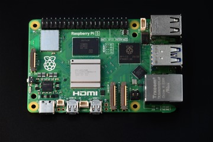 | 라즈베리파이 5 (8GB) + 가이드북 | BirdNET 서버 | 1 | 디바이스마트 | 4GB(15215450)는 조회 당시 재고 확보 중 |
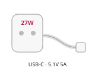 | 공식 라즈베리파이 27W USB-C 어댑터 | 전원 5.1V 5A | 1 | 디바이스마트 | KC 인증. 다른 충전기는 전원 부족 경고가 나요 |
| 라즈베리파이 5 공식 케이스 (팬 포함) | 보호·냉각 | 1 | 디바이스마트 | 팬 대신 Active Cooler(15276241)를 쓸 수도 있지만 둘을 함께 달지는 않아요 | |
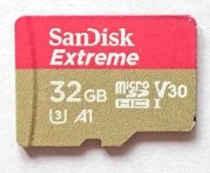 | SanDisk Extreme microSDXC 64GB (SDSQXAH-064G-GN6MN) | 운영체제 카드 | 1 | 디바이스마트 | A2 규격. 공식 A2 64GB(15549242)는 조회 당시 품절 |
| USB 3.0 카드 리더 (넥시 NX-U30CR) | PC에서 Pi 카드 굽기 | 모둠당 1 | 디바이스마트 | ML2장의 카드 리더가 있으면 그대로 사용 | |
| 이미 있는 것 | |||||
| ML2장 물까치 관측기 한 벌 | 피코 1차 판정·녹음 | 1 | Wi-Fi 연결을 위해 wifi_config.py 필요(본 교재 1장) | ||
| PC(Windows 10/11 또는 macOS) | Imager·SSH·브라우저 | 1 | Pi와 같은 공유기에 연결 | ||
| 교실 공유기(Wi-Fi) | 피코·Pi·PC를 한 네트워크로 | 학급 1 | 'AP 격리'가 꺼져 있어야 해요(부록 참고) | ||
사진 출처
- Raspberry_Pi_5_Board.jpg · SimonWaldherr · CC BY-SA 4.0
- SanDisk_Extreme_microSDHC_Card,_32GB.png · Paowee · CC BY-SA 4.0 · 사진은 32GB예요
- SD_card_reader.jpg · Dineshkumar Nallaveerappan · CC BY-SA 4.0 · 예시 사진
표의 링크는 디바이스마트 상품이에요. 가격과 재고는 주문할 때 다시 확인해야 해요. 라즈베리파이 5는 전원이 부족하면 경고를 내고 느려지므로 공식 27W 어댑터를 써요. 팬이 달린 공식 케이스를 쓰면 판정을 오래 해도 뜨거워지지 않아요. 라즈베리파이용 microSD는 운영체제를 담는 카드예요. 피코의 녹음용 카드나 MP3용 카드와 다른 카드예요. 라즈베리파이를 처음 쓴다면 이 장을 시작하기 전에 부록의 세팅을 먼저 끝내요.
🔗 부록 · 라즈베리파이 5 세팅 A to Z서버 켜기
서버 프로그램 bird_server.py는 BirdNET을 한 번 불러 두고 판정 요청을 기다려요. 판정하는 새는 물까치, 까치, 직박구리, 참새, 멧비둘기, 박새, 큰부리까마귀 일곱 종으로 좁혀 둬요. 목록을 좁히면 우리 학교에 없는 새로 잘못 판단하는 일이 줄어요. 첫 실행 때 BirdNET 모델을 내려받으므로 인터넷이 필요해요. 서버가 켜지면 화면에 주소가 나오고, 같은 공유기에 연결된 PC의 브라우저에서 그 주소를 열면 판정 페이지가 나와요. 원격 접속 창을 닫으면 서버도 꺼져요. 창을 닫아도 계속 켜 두려면 부록의 자동 실행을 설정해요.
- 부록 끝내기부록 K까지 끝내면
~/bird폴더에 가상환경, BirdNET,bird_server.py가 준비되어 있어요. - 자동 실행을 했다면부록 L을 설정했다면 서버는 이미 켜져 있어요. 아래 명령은 건너뛰고 브라우저로 주소만 열어요.
- 손으로 켜기PC에서
ssh 사용자이름@호스트이름.local로 접속한 뒤 아래 명령 세 줄을 한 줄씩 붙여 넣어요. 첫 실행은 모델을 내려받느라 1~2분 걸려요. - 주소 확인화면에 나온
http://192.168.…:8000주소를 적어 두고, PC 브라우저에서 열어요.
cd ~/bird
source venv/bin/activate
python bird_server.py예상 화면
판정할 새 7종: 물까치, 까치, 직박구리, 참새, 멧비둘기, 박새, 큰부리까마귀 브라우저에서 여세요 → http://192.168.0.23:8000 (피코 코드의 SERVER에도 이 주소) * Serving Flask app 'bird_server' * Running on http://192.168.0.23:8000
① 2차 판정 — 모아 둔 소리 다시 판정하기
앞 장의 탐지기가 microSD에 남긴 물까치 후보 WAV를 카드 리더로 PC에 옮긴 뒤, 판정 페이지에서 여러 개를 한꺼번에 올려요. 표에는 파일마다 BirdNET의 판정, 가장 높은 점수를 받은 새, 신뢰도가 나오고 소리를 다시 들을 수 있어요. 피코가 물까치 후보라고 한 파일 가운데 BirdNET도 물까치라고 한 비율을 세면, 피코가 저장한 후보 안에서 두 판정이 얼마나 일치하는지 알 수 있어요. 피코가 저장하지 않은 소리까지 포함한 재현율은 아니에요. BirdNET도 틀릴 수 있으므로, 두 판정이 다른 파일은 직접 들어 보고 결정해요.
- 카드 옮기기피코 관측기에서 버튼을 눌러 끝내고, 녹음용 microSD를 카드 리더로 PC에 연결해
eco폴더를 복사해요. - 올리기판정 페이지에서 파일 선택 →
_mulkkachi.wav로 끝나는 파일을 여러 개 고르고 올리고 판정하기를 눌러요. - 표 보기판정 · 가장 높은 새 · 신뢰도를 보고, 두 판정이 다른 파일은 ▶로 들어 봐요.
- 세기피코 후보 가운데 BirdNET도 물까치라고 한 파일 수를 세어 비율을 구해요. 판정 기록 CSV 내려받기로 표를 저장해요.
② 실시간 판정 — 피코가 묻고 라즈베리파이가 답하기
피코는 소리가 나면 3초를 듣고 k-NN 표 수를 센 뒤, 그 WAV를 Wi-Fi로 라즈베리파이에 보내요. BirdNET이 새 이름을 답하면 피코가 그 새의 MP3를 틀고, 답은 피코 표 수와 함께 server.csv에 남아요. BirdNET이 '모르겠음'이라고 답한 소리는 피코와 라즈베리파이 양쪽에서 지워요. 사람 목소리일 수 있기 때문이에요. 서버가 꺼져 있거나 응답이 없으면 피코는 멈추지 않고 앞 장처럼 피코 판단만으로 관측을 이어가요.
MP3 카드에 새 이름 6개 더 넣기
0002.mp3부터 0007.mp3까지 순서대로 한 개씩 복사해요. Mac이라면 복사한 뒤 dot_clean /Volumes/카드이름을 실행해요. 번호가 섞였으면 카드를 포맷하고 0001부터 다시 복사해요.- Wi-Fi 파일피코에
wifi_config.py(본 교재 1장)가 있는지 확인해요. 교실 공유기의 이름과 비밀번호가 들어 있어야 해요. - 주소 적기코드 ⑤의
SERVER에 우리 모둠 라즈베리파이 주소를 적어요.http://와:8000까지 그대로 적어요. - 실행라즈베리파이 서버가 켜진 상태에서 Thonny로 코드 ⑤를 실행해요. 판정 페이지 표에 피코가 보낸 줄이 생기는지 봐요.
- 끝내기버튼을 누르면 하던 판정을 마치고 안전하게 끝나요.
# 물까치 찾기 ⑤ — 라즈베리파이에게 물어보기 (피코 k-NN + BirdNET)
# 소리가 나면 피코가 3초를 듣고 k-NN 표를 센 뒤, 그 WAV를 Wi-Fi로 라즈베리파이 5의 서버(bird_server.py)에 보내요.
# BirdNET이 새 이름과 신뢰도를 돌려주면, 그 새의 MP3를 틀고 server.csv에 피코 표 수와 함께 기록해요.
# server.csv로 '피코만 / BirdNET만 / 피코가 거른 뒤 BirdNET' 세 방식을 나중에 비교할 수 있어요.
# 서버가 응답하지 않으면 피코 판단만으로 계속 관측해요. 버튼(D18)을 누르면 안전하게 끝나요.
# 준비: Pi 5에서 bird_server.py 실행 → 화면에 나온 주소를 아래 SERVER에 적기, 피코에 wifi_config.py 저장
import eco_lib as E
import os, socket, time
SERVER = "http://192.168.0.23:8000" # ← bird_server.py가 알려 준 주소로 바꾸세요
TARGET = "물까치"
K_NN = 9
MIN_VOTES = 3 # 피코 혼자 판단할 때의 기준(서버가 없을 때, SEND_ALL=False일 때 사용)
SEND_ALL = True # True: 소리가 나면 모두 BirdNET에게 물어요. False: 피코가 MIN_VOTES 이상일 때만 물어요(보내는 횟수↓ 놓침↑)
K = 2.0
COOLDOWN = 2
TIMEOUT = 10 # 서버 응답을 기다리는 최대 시간(초)
TRACKS = {"물까치": 1, "까치": 2, "직박구리": 3, "참새": 4, "멧비둘기": 5, "박새": 6, "큰부리까마귀": 7} # MP3 번호
def _send_all(s, data): # 보낼 데이터를 끝까지 보내요
mv = memoryview(data)
while mv:
n = s.send(mv)
mv = mv[n:]
def _parse(server): # "http://192.168.0.23:8000" → ("192.168.0.23", 8000)
if not server.startswith("http://"): raise ValueError("SERVER는 http://로 시작해야 해요")
host, _, port = server[7:].rstrip("/").partition(":")
return host, int(port or 80)
def _request(head, path=None): # HTTP 요청을 보내고 (상태 코드, 본문 글자)를 돌려줘요
host, port = _parse(SERVER)
s = socket.socket()
try:
s.settimeout(TIMEOUT)
s.connect(socket.getaddrinfo(host, port)[0][-1])
_send_all(s, head.encode())
if path:
buf = bytearray(2048)
with open(path, "rb") as f:
while True:
n = f.readinto(buf)
if not n: break
_send_all(s, memoryview(buf)[:n])
resp = b""
while True:
c = s.recv(512)
if not c: break
resp += c
finally:
s.close()
first, _, rest = resp.partition(b"\r\n")
body = rest.partition(b"\r\n\r\n")[2]
code = int(first.split()[1]) if len(first.split()) > 1 else 0
return code, body.decode().strip()
def server_ok(): # 시작할 때 서버에 닿는지 확인
host, port = _parse(SERVER)
try:
code, text = _request("GET /ping HTTP/1.0\r\nHost: %s\r\n\r\n" % host)
return code == 200 and text == "ok"
except Exception as e:
print("서버 확인 실패:", e)
return False
def ask(path, name): # WAV를 보내고 (판정, 가장 높은 새, 신뢰도)를 받아요. 실패하면 None
host, port = _parse(SERVER)
size = os.stat(path)[6]
head = ("POST /judge HTTP/1.0\r\nHost: %s\r\nContent-Type: audio/wav\r\nX-File: %s\r\n"
"Content-Length: %d\r\n\r\n" % (host, name, size))
try:
code, text = _request(head, path)
if code != 200: raise OSError("서버가 %d로 답했어요" % code)
decision, best, conf = text.split(" ")
return decision, best, float(conf)
except Exception as e:
print(" 서버에 묻지 못했어요:", e)
return None
def check(audio, tmp, t, n, online): # 후보를 저장하고, 서버에 묻고, 답에 따라 말해요
name = E.stamp() + ("_cand.wav" if n >= MIN_VOTES else "_check.wav")
path = "/sd/eco/" + name
os.rename(tmp, path)
bird, best, conf = "서버 없음", "없음", 0.0
if online:
E.led((20, 0, 30)) # 보라 = 라즈베리파이에게 묻는 중
r = ask(path, name)
if r: bird, best, conf = r
else: bird = "서버 오류"
E.log("server.csv", "time,pico_votes,birdnet,best,confidence,file", "%s,%d,%s,%s,%.2f,%s" % (t, n, bird, best, conf, name))
if bird in TRACKS: # BirdNET이 아는 새라고 답했어요
print("%s %s인가 봐요! (피코 %d표 · BirdNET %.2f) → %s" % (t, bird, n, conf, name))
E.led((0, 40, 20) if bird == TARGET else (30, 30, 30))
E.say(audio, TRACKS[bird])
elif bird in ("서버 없음", "서버 오류") and n >= MIN_VOTES: # 서버가 없으면 피코 판단으로
print("%s 물까치 후보 (피코 %d표 · %s) → %s" % (t, n, bird, name))
E.led((0, 40, 20), n)
E.say(audio, TRACKS[TARGET])
else:
print("%s BirdNET: %s (가장 높은 새 %s %.2f) · 피코 %d표" % (t, bird, best, conf, n))
E.remove_quiet(path) # 새가 아니면 소리는 남기지 않아요
def main():
if not (isinstance(MIN_VOTES, int) and 1 <= MIN_VOTES <= K_NN):
raise ValueError("MIN_VOTES는 1 이상 K_NN 이하의 정수여야 해요")
E.stop_reset(); mounted = False; audio = None
try:
mounted = E.sd_open()
votes, cnt = E.knn_load(K_NN)
if TARGET not in cnt: raise ValueError("예시에 '%s'가 없어요. ① 예시 모으기를 먼저 하세요" % TARGET)
print("예시를 불러왔어요:", cnt)
online = E.wifi_connect() and server_ok()
print("라즈베리파이 서버", "연결됨" if online else "연결 안 됨 → 피코 판단만 해요 (SERVER 주소와 Wi-Fi를 확인하세요)")
E.mp3_open()
audio = E.mic_open()
quiet = E.baseline(audio); thresh = quiet * K + 20
print("듣기 시작! (조용할 때 %.0f → 기준 %.0f) 끝내려면 버튼." % (quiet, thresh))
tmp = "/sd/eco/tmp.wav"; E.remove_quiet(tmp)
E.led((0, 0, 3))
while not E.want_stop():
if E.level(audio) <= thresh: continue
E.led((30, 20, 0)) # 노랑 = 듣는 중
try:
pieces, active = E.listen3(audio, thresh, tmp, E.small)
E.led((0, 0, 20)) # 파랑 = 피코가 생각 중
v = votes(E.features3(pieces, active)); n = v.get(TARGET, 0); t = E.when()
if n >= MIN_VOTES or SEND_ALL:
check(audio, tmp, t, n, online)
else:
print("%s 아니에요 (물까치 %d표)" % (t, n))
finally:
E.remove_quiet(tmp)
E.drain(audio, COOLDOWN); E.led((0, 0, 3))
finally:
E.finish(audio, mounted)
try:
main()
except Exception as e:
print("문제가 생겼어요:", e)
E.error_blink(); E.led((40, 0, 0))예상 화면 (피코)
예시를 불러왔어요: {'물까치': 15, '다른 새': 12, '말소리': 10, '배경': 10, '기타': 10}
라즈베리파이 서버 연결됨
듣기 시작! (조용할 때 31 → 기준 82) 끝내려면 버튼.
2026-10-01 07:21:40 BirdNET: 모르겠음 (가장 높은 새 없음 0.00) · 피코 1표
2026-10-01 07:22:15 물까치인가 봐요! (피코 5표 · BirdNET 0.83) → 20261001_072215_cand.wav
안전하게 끝났어요. 이제 전원을 뽑아도 됩니다.예상 화면 (라즈베리파이)
피코 → 20261001_072140_check.wav (지움) 모르겠음 (없음 0.00) 피코 → 20261001_072215_cand.wav 물까치 (물까치 0.83)
세 방식을 같은 기록으로 비교하려면 SEND_ALL = True(기본값)로 두어요. 그래야 피코가 후보로 고르지 않은 소리에도 BirdNET의 답이 남아요.
③ 세 방식 비교하기
휴대폰으로 물까치 녹음과 다른 소리를 하나씩 틀어 주고, 무엇을 틀었는지 순서대로 적어 둬요. 관측이 끝나면 server.csv를 스프레드시트로 열어 truth 열을 만들고, 물까치를 튼 줄에는 1, 나머지에는 0을 적어요. PC 비교 도구가 피코만, BirdNET만, 피코가 거른 뒤 BirdNET 세 방식의 재현율과 오판을 기준별로 보여 줘요. 결과를 보고 우리 모둠의 관측 목적에 맞는 방식과 기준을 고르고, 그 이유를 적어요.
- 틀어 주고 적기ML2 ③과 같은 방법이에요. 코드 ⑤를 켜 둔 채 물까치 녹음과 다른 소리를 10초쯤 간격으로 하나씩 틀고, 틀 때마다 시각과 무엇을 틀었는지 적어요.
- 끝내고 옮기기버튼을 눌러 끝내고 LED가 꺼지면 녹음용 SD를 PC로 옮겨
eco/server.csv를 스프레드시트로 열어요. - 정답 적기적어 둔 시각과
time열을 맞춰truth열에 물까치면 1, 아니면 0을 적고 CSV로 저장해요. - 채점 도구 실행ML2의 코드 ③(같은 채점 도구)을
server.csv와 같은 폴더에 두고,MAGPIE_PLAYED와OTHER_PLAYED를 적은 뒤 Thonny의 '이 컴퓨터의 Python'으로 실행해요. BirdNET 방식 줄이 함께 나와요.
예상 화면 (일부)
server.csv: 판정 18줄 (물까치 6 · 다른 소리 12) 방식 | 재현율 | 오판 피코만 MIN_VOTES 3 | 0.83 | 0.33 … BirdNET만 신뢰도 0.25 | 0.33 | 0.00 피코 3표 → BirdNET 0.25 | 0.33 | 0.00 (교재 제작 때 모의 시험의 18개 판정. 여러분의 기록으로 다시 계산하세요)
문제 해결과 확인
SERVER와 wifi_config.py를, 안 열리면 라즈베리파이 서버를 확인해요. 고친 뒤에는 코드 ⑤를 다시 실행해요. 시작할 때 연결되지 않으면 끝날 때까지 BirdNET에 묻지 않아요.:8000이 빠짐, https로 입력, PC가 다른 Wi-Fi에 연결됨, 공유기의 AP 격리http://주소:8000으로 다시 입력하고, PC가 같은 공유기에 있는지 확인해요. 그래도 안 되면 부록의 'AP 격리' 항목을 봐요.cd ~/bird 뒤 source venv/bin/activate를 먼저 실행해요. 줄 앞에 (venv)가 보여야 해요.ping -c 3 pypi.org로 인터넷을 확인하고, 연결된 뒤 다시 실행해요. 한 번 받은 뒤에는 다시 받지 않아요.피코가 먼저 거른 뒤 BirdNET에 물으면 왜 놓치는 물까치가 늘어날까요?
BirdNET이 '모르겠음'이라고 한 소리는 왜 지우나요?
서버가 꺼지면 피코는 어떻게 하나요?
재현율과 오판 가운데 무엇을 우선할지는 무엇으로 정하나요?
현장에서 쓸 때와 정리
실시간 판정은 피코가 교실 공유기의 Wi-Fi가 닿는 곳에 있을 때만 돼요. Wi-Fi가 닿지 않는 곳에서는 앞 장처럼 기록만 하고 나중에 2차 판정을 해요. 라즈베리파이는 전원 어댑터에 연결해 교실에 두고, 부록의 자동 실행을 설정하면 전원만 켜도 서버가 시작돼요. 소리는 학교 공유기 안에서만 오가고 인터넷으로 나가지 않아요. 그래도 사람이 대화하는 곳에는 설치하지 않아요. 소리가 날 때마다 3초가 라즈베리파이로 보내지기 때문이에요.
🔗 부록 L · 서버 자동 실행 설정피코는 늘 켜 두고 듣는 역할이고, 라즈베리파이는 무거운 AI로 판정하는 역할을 나눠 맡아요. 두 판정의 장단점을 같은 데이터로 비교해 보고 관측 방식을 정하는 것이 이 장의 핵심이에요. BirdNET의 판정도 확률이므로 중요한 기록은 사람이 소리를 듣고 확인해요. 더 나아가려면 녹음 품질을 높이거나(더 높은 샘플링 주파수), 우리 지역과 계절에 맞게 BirdNET의 종 목록을 조정할 수 있어요.
라즈베리파이 5 세팅 A to Z — 모니터 없이 PC에서
부품 준비부터 운영체제 설치, SSH 접속, BirdNET 설치, 전원만 켜면 서버가 시작되는 설정까지 차례로 따라가요.
- Raspberry Pi Imager로 microSD에 운영체제를 굽고 사용자·Wi-Fi·SSH를 미리 설정한다
- PC에서 SSH로 라즈베리파이에 접속해 명령을 실행한다
- 가상환경에 BirdNET과 Flask를 설치하고 판정 서버를 실행한다
- 서버가 부팅할 때 저절로 시작되게 하고, 주소 고정·안전한 종료를 익힌다
라즈베리파이 5는 손바닥만 한 컴퓨터이고 리눅스 운영체제(Raspberry Pi OS)로 동작해요. 이 부록에서는 모니터와 키보드를 연결하지 않고 PC에서 원격으로 접속해 모든 설정을 해요. 부품 준비부터 운영체제 설치, 원격 접속, BirdNET 설치, 전원을 켜면 서버가 저절로 시작하게 하는 설정까지 차례로 다뤄요. 명령어는 한 줄씩 복사해 붙여 넣고 결과가 예상 화면과 같은지 확인한 뒤 다음으로 넘어가요.
A. 준비물
라즈베리파이 5, 공식 27W 전원 어댑터, 팬이 달린 공식 케이스, 64GB microSD, 카드 리더가 필요해요. PC는 Windows 10 이상 또는 macOS 13 이상이어야 운영체제 설치 프로그램(Raspberry Pi Imager)을 쓸 수 있어요. 교실 공유기의 Wi-Fi 이름과 비밀번호를 미리 알아 두세요. 아이디를 입력해 로그인하는 학교 Wi-Fi는 이 방법으로 연결할 수 없어요.
| 사진 | 부품 | 역할 | 수량 | 구입 | 비고 |
|---|---|---|---|---|---|
| 라즈베리파이 5 (8GB) + 가이드북 | BirdNET 서버 | 1 | 디바이스마트 | 4GB(15215450)는 조회 당시 재고 확보 중 | |
| 공식 라즈베리파이 27W USB-C 어댑터 | 전원 5.1V 5A | 1 | 디바이스마트 | KC 인증. 다른 충전기는 전원 부족 경고가 나요 | |
| 라즈베리파이 5 공식 케이스 (팬 포함) | 보호·냉각 | 1 | 디바이스마트 | 팬 대신 Active Cooler(15276241)를 쓸 수도 있지만 둘을 함께 달지는 않아요 | |
| SanDisk Extreme microSDXC 64GB (SDSQXAH-064G-GN6MN) | 운영체제 카드 | 1 | 디바이스마트 | A2 규격. 공식 A2 64GB(15549242)는 조회 당시 품절 | |
| USB 3.0 카드 리더 (넥시 NX-U30CR) | PC에서 Pi 카드 굽기 | 모둠당 1 | 디바이스마트 | ML2장의 카드 리더가 있으면 그대로 사용 | |
| 이미 있는 것 | |||||
| ML2장 물까치 관측기 한 벌 | 피코 1차 판정·녹음 | 1 | Wi-Fi 연결을 위해 wifi_config.py 필요(본 교재 1장) | ||
| PC(Windows 10/11 또는 macOS) | Imager·SSH·브라우저 | 1 | Pi와 같은 공유기에 연결 | ||
| 교실 공유기(Wi-Fi) | 피코·Pi·PC를 한 네트워크로 | 학급 1 | 'AP 격리'가 꺼져 있어야 해요(부록 참고) | ||
사진 출처
- Raspberry_Pi_5_Board.jpg · SimonWaldherr · CC BY-SA 4.0
- SanDisk_Extreme_microSDHC_Card,_32GB.png · Paowee · CC BY-SA 4.0 · 사진은 32GB예요
- SD_card_reader.jpg · Dineshkumar Nallaveerappan · CC BY-SA 4.0 · 예시 사진
- PC가 Windows 10 이상 또는 macOS 13 이상이다
- 교실 공유기의 Wi-Fi 이름과 비밀번호를 안다 (아이디 로그인 방식이 아니다)
- 모둠 번호를 정했다 (호스트 이름에 써요. 예: bird-3)
- 교실 공유기의 AP 격리(무선 격리)가 꺼져 있는지 관리자에게 확인했다 (켜져 있으면 PC에서 라즈베리파이에 접속할 수 없어요)
B. 조립
케이스의 팬 선을 보드의 팬 연결 단자에 꽂고 뚜껑을 닫아요. 라즈베리파이 5는 전원을 꽂으면 버튼을 누르지 않아도 바로 켜지므로 전원은 microSD를 넣은 뒤 가장 마지막에 연결해요. 전원 어댑터는 반드시 공식 27W를 써야 해요. 휴대폰 충전기는 전압이 모자라 느려지거나 microSD가 망가질 수 있어요.
- 팬 연결케이스의 팬 선을 보드의 FAN 단자(4핀)에 꽂아요.
- 케이스 닫기보드를 케이스에 넣고 뚜껑을 닫아요.
- 전원은 아직microSD를 굽고 넣은 뒤(E 단계) 마지막에 전원을 연결해요.
C·D. Imager 설치와 운영체제 굽기
모니터가 없으므로 첫 부팅 때 바로 Wi-Fi에 접속하고 원격 접속을 받을 수 있도록 굽기 전에 사용자 이름, 비밀번호, Wi-Fi, SSH를 모두 정해 둬요. 이 설정을 건너뛰면 첫 부팅 때 화면으로만 설정을 물어서 모니터 없이는 접속할 수 없어요. 예전의 기본 계정(pi)도 없어졌어요. 지역은 서울을 골라요. 지역이 Wi-Fi 사용 규칙(국가)과 시간대를 정하고 목록에서 바로 옆에 있는 다른 도시를 잘못 고르기 쉬우니 확인해요. 호스트 이름은 모둠마다 다르게 정해요. 예를 들어 bird-1, bird-2처럼 정해요. 모두 같은 이름이면 어느 라즈베리파이에 접속하는지 알 수 없어요. 운영체제는 화면이 없는 Lite 판을 골라요. 서버로만 쓰므로 가볍고 빨라요.
🔗 Raspberry Pi Imager 내려받기 (공식)- Imager 설치위 링크에서 Windows는
.exe를 받아 실행하고, Mac은.dmg를 열어 Imager를 응용 프로그램 폴더로 끌어 넣어요. - 장치(Device)Raspberry Pi 5를 골라요.
- 운영체제(OS)Raspberry Pi OS (other) → Raspberry Pi OS Lite (64-bit)를 골라요.
- 저장장치(Storage)카드 리더에 꽂은 microSD를 골라요. 시스템 드라이브 제외(Exclude system drives)는 켜 둬요. PC의 하드디스크를 고르면 지워져요.
- 호스트 이름
bird-모둠번호(예:bird-3). 영문 소문자·숫자·하이픈만 써요. - 지역(Localisation)수도를 Seoul로 골라요. 시간대 Asia/Seoul, 키보드 kr이 함께 채워져요.
- 사용자(User)사용자 이름(영문 소문자)과 비밀번호를 정하고 종이에 적어 둬요. sudo를 쓸 때도 이 비밀번호를 입력해요.
- Wi-Fi교실 공유기의 Wi-Fi 이름(SSID)과 비밀번호를 입력해요.
- 원격 접속(Remote Access)Enable SSH를 켜고 Use password authentication을 골라요.
- 쓰기(Write)쓰기와 검증(verify)이 끝날 때까지 기다린 뒤 카드를 꺼내요.
E·F. 첫 부팅과 주소 찾기
첫 부팅은 카드 공간을 늘리고 설정을 적용하느라 몇 분 걸리므로 기다려요. PC에서 '호스트이름.local'로 응답이 오면 라즈베리파이가 공유기에 연결된 거예요. 응답이 없으면 공유기 관리 페이지의 연결 기기 목록이나 휴대폰 네트워크 검색 앱으로 IP 주소를 찾아요.
- 켜기microSD를 라즈베리파이에 넣고 27W 전원을 연결해요. 초록 LED가 깜빡이면 부팅 중이에요.
- 기다리기첫 부팅은 몇 분 걸려요. 3분쯤 기다려요.
- 응답 확인PC의 명령 창(Windows는 PowerShell, macOS는 터미널)에서 아래 명령으로 응답을 확인해요.
ping bird-3.local예상 화면 (Windows는 4번, macOS는 멈출 때까지 반복돼요. macOS는 Ctrl+C로 멈춰요)
Reply from 192.168.0.23: bytes=32 time=6ms TTL=64 (macOS) 64 bytes from 192.168.0.23: icmp_seq=0 ttl=64 time=6.1 ms
bird-3을 찾거나, 휴대폰 네트워크 검색 앱(예: Fing)에서 제조사가 Raspberry Pi인 기기를 찾아 IP 주소를 적어요. 그다음부터는 bird-3.local 대신 그 IP 주소를 써요.G. PC에서 SSH로 접속하기
터미널은 마우스 대신 글자로 컴퓨터에 명령을 내리는 프로그램이에요. Windows에서는 PowerShell을 쓰고 Mac에서는 터미널 앱을 사용해요. 커서가 깜빡이는 줄의 앞부분을 프롬프트라고 부르고, 그 뒤에 명령을 입력한 뒤 Enter를 누르면 실행돼요. SSH로 접속한 뒤에도 같은 창을 쓰지만, 입력한 명령은 PC가 아니라 라즈베리파이에서 실행돼요. 이때 프롬프트 앞부분이 라즈베리파이 이름으로 바뀌는 것으로 구분해요. 명령은 한 글자나 띄어쓰기 하나만 달라도 동작하지 않으므로 교재의 복사 버튼으로 복사해 붙여 넣는 것이 좋아요.
- 터미널 열기Windows는 시작 버튼을 누르고 PowerShell을 입력해 열어요. Mac은 Cmd+Space를 누르고 터미널을 입력해 열어요.
- 명령 입력아래 명령을 붙여 넣고,
사용자이름과bird-3을 D 단계에서 정한 것으로 고친 뒤 Enter를 눌러요. - yes 입력처음 한 번 '계속 연결할까요?'라는 질문이 나오면 yes를 끝까지 입력하고 Enter를 눌러요.
- 비밀번호입력해도 화면에 아무것도 나오지 않아요. 그대로 입력하고 Enter를 눌러요.
ssh 사용자이름@bird-3.local처음 접속할 때 화면
The authenticity of host 'bird-3.local (192.168.0.23)' can't be established. ED25519 key fingerprint is SHA256:… Are you sure you want to continue connecting (yes/no/[fingerprint])? yes 사용자이름@bird-3.local's password: ← 입력해도 보이지 않아요 사용자이름@bird-3:~ $ ← 접속 성공
SSH는 PC의 명령 창에서 다른 컴퓨터에 명령을 입력하게 해 주는 방법이에요. 처음 접속할 때 이 컴퓨터를 믿겠냐는 질문이 나오면 yes라고 입력해요. 비밀번호는 입력해도 화면에 아무것도 표시되지 않아요. 그대로 입력하고 Enter를 누르면 돼요. 줄 앞에 '사용자이름@호스트이름'이 보이면 이제부터 입력하는 명령은 라즈베리파이에서 실행돼요.
ssh 사용자이름@192.168.0.23처럼 접속해요.H. 업데이트 (필요할 때)
업데이트는 보안 업데이트와 고친 부분을 받는 단계로, 첫 판정을 확인한 뒤에 해도 돼요. sudo가 붙은 명령은 관리자 권한으로 실행되고, 비밀번호를 물으면 D 단계에서 정한 비밀번호를 입력해요. 조금 전에 입력했다면 다시 묻지 않을 수 있어요. 업데이트는 인터넷 속도에 따라 몇 분 이상 걸릴 수 있어요.
sudo apt update
sudo apt full-upgrade -y
sudo rebootsudo reboot를 하면 SSH 연결이 끊겨요. 1분쯤 뒤 G 단계의 ssh 명령으로 다시 접속해요.I. 작업 폴더와 가상환경
최신 라즈베리파이 운영체제는 시스템 전체에 파이썬 패키지를 설치하지 못하게 막아 두고 시도하면 externally-managed-environment 오류가 나요. 그래서 bird 폴더 안에 이 프로젝트만 쓰는 가상환경(venv)을 만들고 그 안에 설치해요. 가상환경을 켜면 줄 앞에 (venv)가 보이고 SSH로 새로 접속할 때마다 다시 켜야 해요.
mkdir -p ~/bird
cd ~/bird
python3 -m venv venv
source venv/bin/activate예상 화면
(venv) 사용자이름@bird-3:~/bird $
cd ~/bird와 source venv/bin/activate를 먼저 입력해요. 줄 앞에 (venv)가 없으면 설치한 패키지를 찾지 못하고, pip를 쓰면 externally-managed-environment 오류가 나요.J. BirdNET과 Flask 설치
BirdNET은 새소리 판정 AI 패키지이고 Flask는 브라우저와 피코의 요청을 받는 웹 서버 패키지예요. 설치는 몇 분 걸리고 끝나면 두 패키지를 불러오는 한 줄 명령으로 설치가 잘 되었는지 확인해요.
pip install "birdnet==1.1.1" flask
python -c "import birdnet, flask; print('설치 완료')"예상 화면 (마지막 줄)
설치 완료
K. 서버 받고 첫 실행
교재 사이트에서 서버 파일을 그대로 내려받으므로 코드를 직접 입력하지 않아도 돼요. 첫 실행 때 BirdNET 모델을 내려받으므로 인터넷이 필요하고 한 번 받은 뒤에는 다시 받지 않아요. 화면에 나온 주소를 PC 브라우저에서 열어 판정 페이지가 보이면 서버가 동작하는 거예요.
wget -O bird_server.py.new https://greatsong.github.io/2026-vibe-pico/snippets/bird_server.py && mv bird_server.py.new bird_server.py
python bird_server.py예상 화면
판정할 새 7종: 물까치, 까치, 직박구리, 참새, 멧비둘기, 박새, 큰부리까마귀 브라우저에서 여세요 → http://192.168.0.23:8000 (피코 코드의 SERVER에도 이 주소) * Running on http://192.168.0.23:8000
http://192.168.0.23:8000(화면에 나온 주소)을 열어 '새소리 판정 서버' 페이지가 보이면 성공이에요. 서버를 멈출 때는 SSH 창에서 Ctrl+C를 눌러요.L. 전원만 켜면 서버가 시작되게 (필요할 때)
지금은 SSH 창을 닫으면 서버도 꺼져요. systemd에 서비스로 등록하면 라즈베리파이가 켜질 때 서버가 저절로 시작되고 오류로 멈추면 다시 시작돼요. 등록하기 전에 손으로 켠 서버는 Ctrl+C로 먼저 꺼요. 두 서버가 같은 번호(8000)를 쓰려고 하면 하나가 시작하지 못해요. 서버가 화면에 쓰던 글은 로그 명령으로 볼 수 있어요.
- 손으로 켠 서버 끄기K 단계의 서버가 돌고 있으면 Ctrl+C로 멈춰요.
- 서비스 파일 만들기아래 명령을 통째로 붙여 넣어요.
$USER와$HOME은 내 사용자 이름과 폴더로 저절로 바뀌어요. - 등록하고 시작그다음 명령 세 줄을 한 줄씩 입력해요. 상태에 active (running)이 보이면
journalctl -u bird -f로 '브라우저에서 여세요' 줄이 나올 때까지 기다린 뒤 Ctrl+C로 나와요. PC 브라우저에서 그 주소가 열리면 성공이에요.
sudo tee /etc/systemd/system/bird.service > /dev/null <<EOF
[Unit]
Description=BirdNET bird sound server
Wants=network-online.target
After=network-online.target
[Service]
Type=exec
User=$USER
WorkingDirectory=$HOME/bird
ExecStart=$HOME/bird/venv/bin/python -u $HOME/bird/bird_server.py
Restart=on-failure
RestartSec=5
[Install]
WantedBy=multi-user.target
EOFsudo systemctl daemon-reload
sudo systemctl enable --now bird
systemctl status bird --no-pager예상 화면 (일부)
● bird.service - BirdNET bird sound server
Loaded: loaded (/etc/systemd/system/bird.service; enabled; preset: enabled)
Active: active (running) since …journalctl -u bird -f # 서버가 쓰는 글 보기 (Ctrl+C로 나와도 서버는 계속 돌아요)
sudo systemctl restart bird # bird_server.py를 고친 뒤 다시 시작cat /etc/systemd/system/bird.service로 파일을 열어 User=와 경로에 내 사용자 이름이 들어갔는지 봐요. journalctl -u bird -n 30으로 오류 메시지를 확인해요.M. 주소 고정과 AP 격리 (필요할 때)
공유기는 기기가 다시 켜질 때 다른 주소를 줄 수 있고 그러면 피코 코드의 SERVER 주소가 맞지 않게 돼요. 공유기 관리 페이지에서 라즈베리파이의 MAC 주소에 항상 같은 IP를 주도록 예약하는 방법을 라즈베리파이 공식 문서가 권해요. 공유기에 AP 격리(무선 격리)가 켜져 있으면 같은 Wi-Fi에 연결된 기기끼리 서로 통신할 수 없어요. 공유기 목록에는 라즈베리파이가 보이는데 PC에서 응답이 없으면 AP 격리를 의심하고 공유기 관리자에게 끄도록 요청하거나 수업용 공유기를 따로 써요.
hostname -I
nmcli device show wlan0 | grep -E 'HWADDR|IP4.ADDRESS'- 주소 예약공유기 관리 페이지의 DHCP 설정에서 '주소 예약', '고정 할당' 같은 메뉴를 찾아, 위의 MAC 주소(HWADDR)에 지금 IP를 등록해요. 메뉴 이름은 공유기마다 달라요.
- AP 격리 확인PC에서
ping 라즈베리파이IP를 했을 때 응답이 없는데 공유기 목록에는 보이면, 공유기의 AP 격리(무선 격리)를 꺼 달라고 관리자에게 요청하거나 수업용 공유기를 따로 써요.
N. 안전하게 끄기
종료하지 않고 전원을 바로 뽑으면 microSD의 파일이 망가질 수 있으므로 종료 명령으로 끈 뒤 LED가 빨간색이 되면 전원을 뽑아요. Lite 판에서는 보드의 전원 버튼을 한 번 눌러도 안전하게 종료가 시작돼요. 온도와 전원 상태를 확인하는 명령으로 전원 부족이나 과열 기록이 있는지 볼 수 있어요.
sudo poweroffO·P. 이럴 때는
아이디와 비밀번호를 함께 입력하는 학교 Wi-Fi(WPA2-Enterprise)는 운영체제 굽기 단계에서 설정할 수 없으므로 수업용 공유기를 따로 두는 것이 가장 간단해요. microSD에 운영체제를 다시 구우면 라즈베리파이의 신분 정보가 바뀌어 같은 이름으로 접속할 때 PC가 경고를 내고 접속을 막아요. 이때는 PC에 저장된 옛 정보를 지우는 명령을 한 번 실행한 뒤 다시 접속해요.
ssh-keygen -R bird-3.localssh-keygen -R bird-3.local을 실행하고 다시 접속해요.sudo systemctl restart bird를 써요.vcgencmd get_throttled가 0x0이 아니면 전원 부족이나 과열 기록이 있는 거예요. 공식 27W 어댑터와 팬 케이스를 쓰고, 팬 선이 꽂혔는지 봐요.